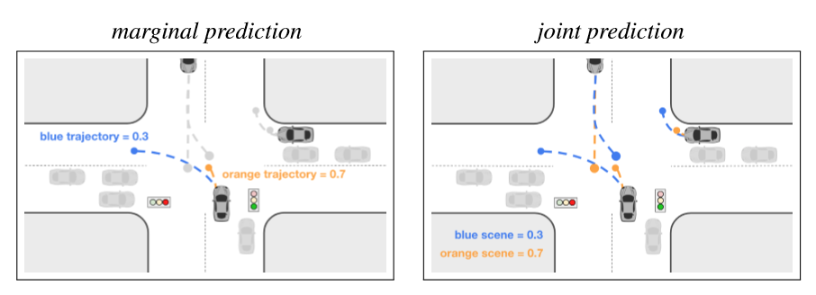
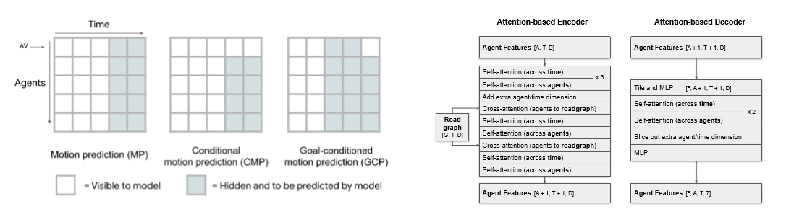
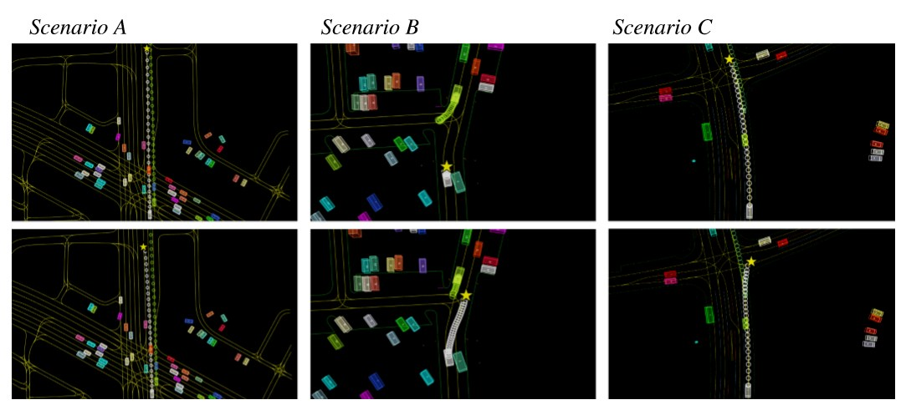
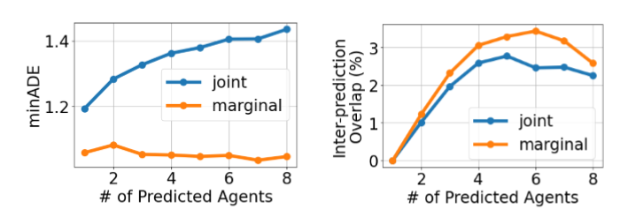
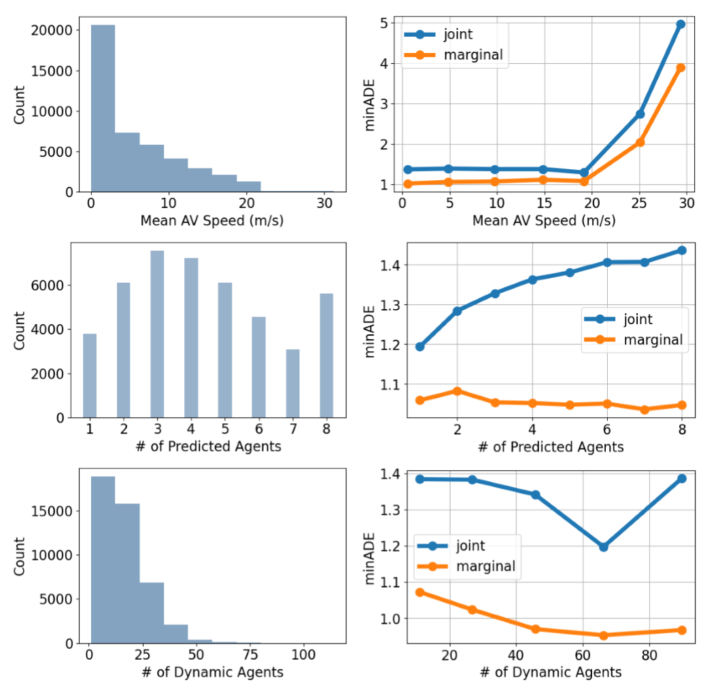
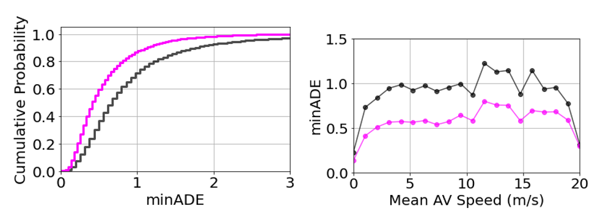

目次
Scene Transformer: A unified architecture for predicting multiple agent trajectories
Jiquan Ngiam*,1、Benjamin Caine*,1、Vijay Vasudevan*,1、Zhengdong Zhang1、Hao-Tien Lewis Chiang2、Jeffrey Ling2、Rebecca Roelofs1、Alex Bewley1、Chenxi Liu2、Ashish Venugopal2、David Weiss2、Ben Sapp2、Zhifeng Chen1、Jonathon Shlens1
1Google Research, Brain Team、2Waymo
{jngiam,bencaine,vrv}@google.com
ICLR 2022 会議論文、arXiv:2106.08417v3 [cs.CV]、2022年3月4日
翻訳について：原文 PDF は
13_Scene_Transformer_2106.08417.pdf（全 25 ページ）。本文、図の説明、図中ラベル、表、脚注、付録を訳出し、論文タイトルと参考文献は原文のまま掲載。図は原図を掲載し、英語ラベルの日本語訳を併記した。数式・数値・引用番号・コードの識別子は原文を維持。原文の記述に関する補足は「訳注」と明示し、本文と区別している。
要旨
複数エージェントの動きを予測することは、動的な環境における計画に不可欠である。自動運転においてこのタスクが難しいのは、エージェント（例えば車両や歩行者）とそれらに付随する振る舞いが多様であり、互いに影響を及ぼし合うためである。先行研究の多くは、過去のすべての動きに基づいて各エージェントの独立な未来を予測し、それら独立な予測に対して計画を立てることに注力してきた。しかし、独立な予測に対して計画を立てると、異なるエージェント間の将来の相互作用の可能性を表現することが難しくなり、最適でない計画につながりうる。本研究では、すべてのエージェントの振る舞いを同時（joint）に予測し、エージェント間の相互作用を考慮した整合的な未来を生成するモデルを定式化する。近年の言語モデリングの手法に着想を得て、マスキング戦略をモデルへのクエリとして用いる。これにより単一のモデルを呼び出すだけで、自動運転車の目標や将来軌道全体、あるいは環境中の他のエージェントの振る舞いに条件付けるなど、多様なやり方でエージェントの振る舞いを予測できる。本モデルのアーキテクチャは注意機構を用いて、道路要素、エージェント間の相互作用、時間ステップにまたがる特徴を統合する。周辺（marginal）動作予測と同時（joint）動作予測の両方について自動運転データセットで本手法を評価し、広く使われている 2 つのデータセットで最高性能を達成した。シーン中心のアプローチ、エージェントの置換に対して同変なモデル、そして系列マスキング戦略を組み合わせることで、本モデルが同時動作予測から条件付き予測に至るさまざまな動作予測タスクを統一できることを示す。
1 はじめに
密集した実世界の都市環境における動作計画は、自動運転技術を実用化するうえで極めて重要な問題である。自動運転は従来、単一のエンドツーエンド学習システムで扱うには難しすぎると考えられてきた（Thrun et al., 2006）。そのため研究者は、このタスクを逐次的なサブタスク、すなわち (i) 認識、(ii) 動作予測、(iii) 計画に分割する方法を選んできた（Zeng et al., 2019）。認識とは、LiDAR やカメラなどのセンサからシーン中の物体を検出・追跡するタスクである。動作予測は、シーン中の他のエージェントの将来の行動を予測することである。最後に計画は、動的な環境の中を進む動作計画を作成することである。
大きな問題をサブタスクに分割する方法は、各サブタスクが真に独立であるときに最適な性能を達成する。しかし、独立性の仮定が成り立たないとき、この戦略は破綻する。例えば、動作予測と計画というサブタスクは真に独立ではない。自動運転車の行動は他のエージェントの振る舞いに大きな影響を与えうる。同様に、他のエージェントの振る舞いによって何が良い計画かが劇的に変わりうる。本研究の目標は、自動運転車（AV）の目標のようなさまざまな形の条件付け情報を活用でき、すべてのエージェントについて未来に関する同時かつ整合的な予測を一度に生成するモデルを開発することで、動作予測と計画の統一に向けて一歩を踏み出すことである。
動作予測タスクは従来、エージェントごとの独立な予測を中心に定式化されてきたが、近年のデータセット（Ettinger et al., 2021; Zhan et al., 2019）は相互作用予測タスクを導入しており、同時未来予測の研究を可能にしている（図 1）。これらの相互作用予測タスクでは、モデルは複数エージェントの同時の未来を予測する必要がある。すなわち、エージェントの未来が互いに整合する1ように、すべてのエージェントについて将来の予測を生成することが求められる。
脚注1：周辺的なエージェント予測は互いに衝突する（重なりを持つ）ことがありうるが、整合的な同時予測では、同一の未来の中で各エージェントが互いの振る舞いを尊重する（重なりを避ける）予測になっているべきである。

図1：同時予測は整合的な動作予測を与える。周辺動作予測と同時動作予測の違いの説明図。各色は個別の予測を表す。左：下中央の車両に対する周辺予測。スコアは軌道の尤度を示す。この予測は他の車両の軌道とは独立であることに注意されたい。右：注目する 3 台の車両に対する同時予測。スコアは、3 台すべての車両の軌道からなるシーン全体の尤度を示す。
図中ラベル：marginal prediction＝周辺予測、joint prediction＝同時予測、blue trajectory = 0.3＝青の軌道 = 0.3、orange trajectory = 0.7＝橙の軌道 = 0.7、blue scene = 0.3＝青のシーン = 0.3、orange scene = 0.7＝橙のシーン = 0.7
同時の未来を生成する素朴なアプローチは、周辺的なエージェント予測の、指数的な数の組み合わせを考えることである。とりわけエージェントの軌道が重なり合う場合、組み合わせの多くは整合的でない。本論文では、エージェント間の相互作用を自然に捉え、全エージェントにわたってシーンレベルで整合的な予測を生成する同時モデルとして学習できる統一モデルを提示する（図 1 右）。本モデルは、密集した環境で多数のエージェントにスケールできるよう、全エージェントに対してシーン中心の表現を用いる（Lee et al., 2017; Hong et al., 2019; Casas et al., 2020a; Salzmann et al., 2020）。また、注意機構をエージェント軸と時間軸に効率よく分解した、自己注意（Vaswani et al., 2017）の単純な変種を採用する。得られるアーキテクチャは、時間を表す次元とシーン全体のエージェントを表す次元とで交互に注意を適用するだけであり、計算効率が高く、一様で、スケーラブルなアーキテクチャとなる。
このようにして得られた Scene Transformer と呼ぶモデルが、独立（周辺）予測と相互作用（同時）予測の両方のベンチマークで優れた性能を達成することを確認した。
さらに、近年の言語モデリングの進展（Brown et al., 2020; Devlin et al., 2019）に着想を得て、マスク付き系列モデルを用いたタスクの新しい定式化を示し、自動運転車（AV）の目標状態や軌道全体にモデルを条件付けられるようにする。この再定式化により、推論時にどのデータを可視にするかを変えるだけで、単一のモデルが動作予測、条件付き動作予測、目標条件付き予測といったタスクを自然にこなせる。
我々の統一アーキテクチャと柔軟な問題定式化が、動作予測と計画をさらに融合するための新たな研究方向を切り開くことを期待する。まとめると、本研究の主な貢献は次のとおりである。
- 単一の順伝播で周辺（独立）予測と同時予測のどちらを生成するようにも、モデルの学習を円滑に切り替えられる、新しいシーン中心のアプローチ。本モデルは Argoverse と Waymo Open Motion Dataset の両方において、周辺予測と同時予測の両タスクで最高性能を達成する。
- 問題に内在する対称性を活用する、エージェント・時間・道路グラフ要素にわたって分解された、置換同変な Transformer ベースのアーキテクチャ。得られるアーキテクチャは効率的であり、世界の状態を統一的に統合する。
- 推論時に仮定上のエージェントの未来に条件付けることを可能にし、条件付き動作予測や目標条件付き予測を実現するマスク付き系列モデリングのアプローチ。
2 関連研究
動作予測のアーキテクチャ。自動運転応用への関心の高まりと、関連するデータセットやベンチマークの公開（Kesten et al., 2019; Chang et al., 2019; Caesar et al., 2020; Ettinger et al., 2021）により、近年、動作予測モデルは隆盛を見せている。成功するモデルは、エージェントの動きの履歴と、道路グラフの要素（例えば車線、停止線、信号機の動的な状態）を考慮しなければならない。さらに、そうしたモデルは道路グラフ環境の文脈の中でこれらのエージェント間の関係を学習しなければならない。
あるクラスのモデルはコンピュータビジョンの文献に大きく依拠しており、入力をマルチチャネルのラスタ化された俯瞰画像として描画する（Cui et al., 2019; Chai et al., 2019; Lee et al., 2017; Hong et al., 2019; Casas et al., 2020a; Salzmann et al., 2020; Zhao et al., 2019）。このアプローチでは、シーン要素間の関係は畳み込みの深層アーキテクチャによって捉えられる。しかし、受容野が局所的な構造であるため、空間的に離れた相互作用を捉えることは難しい。よく用いられる代替手段は、エンティティ中心のアプローチを使うことである。このアプローチでは、エージェントの状態履歴は通常、RNN（Mercat et al., 2020; Khandelwal et al., 2020; Lee et al., 2017; Alahi et al., 2016; Rhinehart et al., 2019）や時間方向の畳み込み（Liang et al., 2020）といった系列モデリング技法で符号化される。道路要素は、姿勢情報と意味的な種別を符号化する基本的なプリミティブ（例えば区分線形のセグメント）で近似される。エンティティ間の関係のモデリングはしばしば情報集約の過程として扱われ、モデルはプーリング（Zhao et al., 2020; Gao et al., 2020; Lee et al., 2017; Alahi et al., 2016; Gupta et al., 2018）、ソフト注意（Mercat et al., 2020; Zhao et al., 2020; Salzmann et al., 2020）、さらにはグラフニューラルネットワーク（Casas et al., 2020a; Liang et al., 2020; Khandelwal et al., 2020）を用いる。
提案手法と同様に、近年のいくつかのモデルは、マルチヘッド注意層から構成される Transformer（Vaswani et al., 2017）を用いている。Transformer は自然言語処理における系列モデリングで広く使われる最先端の選択肢であり（Brown et al., 2020; Devlin et al., 2019）、最近では検出（Bello et al., 2019; Carion et al., 2020; Srinivas et al., 2021）、追跡（Hung et al., 2020）、分類（Ramachandran et al., 2019; Vaswani et al., 2021; Dosovitskiy et al., 2021; Bello, 2013; Bello et al., 2019）といったコンピュータビジョンの中核的なタスクでも有望な結果を示している。動作のモデリングについては、近年の研究は自己注意や Transformer の変種を用いて、さまざまな軸をモデル化している。すなわち、時間方向の軌道の符号化と復号（Yu et al., 2020; Giuliari et al., 2020; Yuan et al., 2021）、エージェント間の関係の符号化（Li et al., 2020; Park et al., 2020; Yuan et al., 2021; Yu et al., 2020; Mercat et al., 2020; Bhat et al., 2020）、そして道路要素との関係の符号化である。複数の軸にわたって自己注意を適用する際、過去の研究は軸ごとに独立した自己注意を用いるか（Yu et al., 2020）、2 つの軸を平坦化して 1 つの同時自己注意層にまとめていた（Yuan et al., 2021）。これに対し本手法は、時間ステップ、エージェント、道路グラフ要素の間の関係を統一的にモデル化するために、軸ごとに分解された注意（axis-factored attention）を提案する。
シーン中心表現とエージェント中心表現。もう一つの重要な設計上の選択は、表現を符号化する座標系（参照フレーム）である。ラスタ化された俯瞰画像を用いる研究（Cui et al., 2019; Chai et al., 2019; Lee et al., 2017; Hong et al., 2019; Casas et al., 2020a; Salzmann et al., 2020）のように、モデリングの大部分をグローバルなシーンレベルの座標系で行うモデルもある。これは共通の座標系における世界状態の単一の共有表現を用いるため、より効率的なモデルにつながりうるが、姿勢不変性を犠牲にする可能性を伴う。一方、エージェント座標系で推論するモデル（Mercat et al., 2020; Zhao et al., 2020; Khandelwal et al., 2020）は本質的に姿勢不変であるが、エージェント数に対して線形に、あるいはエージェント間のペアごとの相互作用数に対して二次的にスケールする。多くの研究は、道路表現のための俯瞰ラスタ表現とエージェントごとの表現を融合した混合方式を採用している（Rhinehart et al., 2019; Tang & Salakhutdinov, 2019; Lee et al., 2017）。我々の研究と同様に、LaneGCN（Liang et al., 2020）はエージェント中心でありながら表現がグローバル座標系にある。我々の知る限り、そのようにしている研究は他にこれだけである。これにより、ラスタ化を行わずに、任意に離れた相互作用と高忠実度な状態表現を捉えつつ効率的な推論が可能になる。
複数エージェントの未来の表現。エージェントの未来を表現する一般的な方法は、エージェントごとの重み付き軌道集合によるものである（Alahi et al., 2016; Biktairov et al., 2020; Buhet et al., 2020; Casas et al., 2020a;a; Chai et al., 2019; Cui et al., 2019; Gao et al., 2020; Hong et al., 2019; Lee et al., 2017; Marchetti et al., 2020; Mercat et al., 2020; Salzmann et al., 2020; Zhao et al., 2020; Chandra et al., 2018）（訳注：「Casas et al., 2020a;a」は原文のまま。同一文献の重複と思われる）。この表現は、主にエージェントごとの距離誤差指標に焦点を当てたベンチマーク（Caesar et al., 2020; Chang et al., 2019; Zhan et al., 2019）によって後押しされている。本研究では、マルチエージェント環境で同時の未来をモデル化すること（図 1 右）が、先行研究ではほとんど探究されてこなかった重要な概念であると主張する。一部の先行研究は、エージェントの未来の一部を他のエージェントに条件付ける、分解されたペアごとの同時分布を考えている。非形式的に言えば、エージェント \(X\) と \(Y\) について \(P(X)\) と \(P(Y|X)\) をモデル化するものである（Khandelwal et al., 2020; Tolstaya et al., 2021; Salzmann et al., 2020）。同時予測を任意のマルチエージェント設定に一般化するために、他の研究（Tang & Salakhutdinov, 2019; Rhinehart et al., 2019; Casas et al., 2020b; Suo et al., 2021; Yeh et al., 2019）はエージェントごとにサンプルを反復的にロールアウトし、各エージェントを以前にサンプリングされた軌道ステップに条件付ける。これに対して本モデルは、対応する尤度を伴う \(k\) 個の異なる同時未来の集合を直接復号する。

図2：複数の動作予測タスクのための単一モデルアーキテクチャ。左：異なるマスキング戦略が異なるタスクを定義する。左の列は現在時刻を表し、最上行は自動運転車（AV）を表すエージェントを示す。マスキング戦略を各予測タスクに合わせることで、単一のモデルを動作予測、条件付き動作予測、目標指向予測に関連するデータで学習できる。右：同時シーンモデリングのための注意ベースのエンコーダ・デコーダアーキテクチャ。このアーキテクチャは、データ中の依存関係を活用するために時間軸とエージェント軸に沿った分解注意を用い、補助情報を注入するためにクロス注意を用いる。
図中ラベル：Time＝時間、Agents＝エージェント、AV＝自動運転車、Motion prediction (MP)＝動作予測（MP）、Conditional motion prediction (CMP)＝条件付き動作予測（CMP）、Goal-conditioned motion prediction (GCP)＝目標条件付き動作予測（GCP）、= Visible to model＝モデルから可視、= Hidden and to be predicted by model＝隠され、モデルが予測する対象、Attention-based Encoder＝注意ベースのエンコーダ、Attention-based Decoder＝注意ベースのデコーダ、Agent Features＝エージェント特徴、Self-attention (across time)＝自己注意（時間方向）、Self-attention (across agents)＝自己注意（エージェント方向）、Add extra agent/time dimension＝エージェント／時間の追加次元を付加、Cross-attention (agents to roadgraph)＝クロス注意（エージェントから道路グラフへ）、Road graph＝道路グラフ、Tile and MLP＝タイル複製と MLP、Slice out extra agent/time dimension＝追加したエージェント／時間次元を切り出して除去
3 手法
Scene Transformer モデルは 3 つの段階からなる。(i) エージェントと道路グラフを高次元空間に埋め込む。(ii) 注意ベースのネットワークを用いて、エージェント間およびエージェントと道路グラフの間の相互作用を符号化する。(iii) 注意ベースのネットワークを用いて複数の未来を復号する。モデルはすべての時間ステップのすべてのエージェントについての特徴を入力として受け取り、またすべての時間ステップのすべてのエージェントについて出力を予測する。対応するマスクを用い、各エージェント・時間ステップには、入力特徴がモデルから隠される（すなわち取り除かれる）かどうかを示す 1（隠す）または 0（可視）の指示子が付随する。このアプローチは BERT（Devlin et al., 2019）のようなマスク付き言語モデルのアプローチを反映したものである。この手法は柔軟であり、モデルに見せるデータを変えるだけで（図 2 左）、動作予測（MP）（Cui et al., 2019; Chai et al., 2019; Lee et al., 2017; Hong et al., 2019; Casas et al., 2020a; Salzmann et al., 2020; Casas et al., 2020a; Liang et al., 2020; Khandelwal et al., 2020）、条件付き動作予測（CMP）（Khandelwal et al., 2020; Tolstaya et al., 2021; Salzmann et al., 2020）、目標条件付き予測（GCP）（Deo & Trivedi, 2020）のために単一のモデルを同時に学習することを可能にする。以下では主要な貢献をまとめ、詳細は付録に譲る。
マルチタスク表現。モデルにおける主要な表現は、\(T\) 個の時間ステップにわたる、\(D\) 次元の特徴を持つ \(A\) 個のエージェントの 3 次元テンソルである。アーキテクチャ内のすべての層で、形状 \([A, T, D]\) の表現、あるいは復号時には \(F\) 個の潜在的な未来にわたる \([F, A, T, D]\) の表現を維持することを目指す。各タスク（MP、CMP、GCP）は、指示マスクを 0 に設定してそのデータをモデルに与えることで、特定のマスキング戦略を持つクエリとして定式化できる（図 2 左）。モデルの目標は、シナリオ中でマスクされた時間とエージェントの部分集合に対応する、網掛けされた各領域の特徴を補完することである。
3.1 エージェントと道路グラフのシーン中心表現
注目するエージェントの位置を原点とし2、すべての道路グラフとエージェントをそれに対して符号化するシーン中心の埋め込みを用いる。これは、各エージェントを順に原点として扱い、エージェントごとに別々に表現を計算するエージェント中心表現を用いるアプローチとは対照的である。
脚注2：WOMD では、自動運転車（AV）を基準にシーンを中心化する。Argoverse では、予測が必要なエージェントを基準にシーンを中心化する。いずれも、すべてのタスクについて、動作予測の設定で最後の可視時間ステップとなる時刻を中心に据える。
詳しく述べると、まず、各エージェント・時間ステップについて、その時間ステップが可視であれば特徴を生成する。次に、静的な道路グラフ、すなわち空間的にも時間的にも静的な道路要素について特徴の集合を生成する。ここでは PointNet（Qi et al., 2017）を用いて、ポリラインごとに 1 つの特徴ベクトルを学習する（標識は長さ 1 のポリラインとして扱う）。最後に、動的な道路グラフ、すなわち空間的には静的だが時間的には動的な道路要素（例えば信号機）について、やはり物体ごとに 1 つの特徴ベクトルからなる特徴の集合を生成する。3 つのカテゴリはいずれも \(xyz\) の位置情報を持ち、注目エージェントを中心として平行移動・回転する前処理を施したうえで、正弦波位置埋め込み（Vaswani et al., 2017）で符号化する。
3.2 符号化 Transformer
全体を通して \([A, T, D]\) の表現を維持する、単純な注意ベースのエンコーダ・デコーダアーキテクチャに焦点を当てる（図 2 右）。ここではアーキテクチャを簡潔にまとめ、詳細は付録と表 5 に譲る。層の大部分は Transformer 層（Vaswani et al., 2017）の一形態である（表 6）。注意層は、クエリ \(Q\)、キー \(K\)、バリュー \(V\) を表す行列によってパラメータ化され、その出力は \(y = \mathsf{softmax}\frac{(Q\,K^T)V}{\sqrt{dim_k}}\) である。各行列は、基礎となる表現 \(x\) の学習された線形変換として計算される（例えば \(Q = W_q\,x\)）。各注意層の後には同じ隠れ次元のフィードフォワード層が続き、その結果を Transformer 層全体への入力とスキップ接続で加算する。エンコーダとデコーダのすべての層は \(D\) 次元の特徴を用いる。デコーダ後の最終層は、7 つの出力を予測する 2 層の MLP である。最初の 6 つの出力は、ある時間ステップにおけるエージェントの、注目エージェントを基準とした絶対座標（例えばメートル）での 3 次元位置と、ラプラス分布でパラメータ化された対応する不確かさに相当する（Meyer & Thakurdesai, 2020）。残りの次元は方位（heading）を予測する。
（訳注：原文の式は \(\mathsf{softmax}\) の引数と \(V\) の位置が通常の表記 \(\mathsf{softmax}(QK^T/\sqrt{dim_k})V\) と異なるが、原文の記法のまま記載した。）
効率的な分解自己注意。計算の大部分は Transformer（Vaswani et al., 2017）で行われる（表 6）。Transformer を使う素朴なアプローチの一つは、エージェントと時間ステップの特徴の集合全体に対して直接注意を適用する（すなわち \(AT\) 次元にわたる注意）ことであろう。しかし、このアプローチは計算コストが高いうえ、同一性の対称性という課題も抱える。すなわち、特定のエージェント識別子を付加していないため、同じ種類で同じ未来時間ステップがマスクされた 2 つのエージェントは Transformer への入力表現が同じになり、結果として同じ出力になってしまう。そこで、時間軸とエージェント軸に基づく分解された注意を設計する（関連するアイデアについては Wang et al. (2020); Szegedy et al. (2016); Ho et al. (2019) を参照）。
時間方向にのみ注意を適用することで、モデルはエージェントの同一性に依存しない滑らかな軌道を学習できる。同様に、エージェント方向にのみ注意を適用することで、モデルは特定の時間ステップに依存しないマルチエージェント相互作用を学習できる。最後に、時間とエージェントの両方の依存関係を捉えるため、モデルは後続の層でエージェント方向と時間方向の注意を単純に交互に適用する（図 2 右パネル）。注意演算は置換同変であるため、モデルは入力におけるエージェントの順序に対しても置換同変である。
クロス注意。補助情報（我々の場合は道路グラフ）を活用するため、クロス注意を用いて、エージェント特徴が道路グラフに注意を向けることで更新されるようにする。具体的には、クエリはエージェントから計算するが、キーとバリューは道路グラフの埋め込みから得る。道路グラフの埋め込みはポリラインごとの PointNet の後で確定しており、したがってこれらの注意層の間には更新されない。このため、モデルは特定の時間ステップやエージェントに依存しない、道路構造とエージェントの間の相互作用を学習する必要がある。強調しておくと、道路グラフ表現も置換同変であり、シーン中の全エージェントで共有される。これに対し、従来のアプローチはしばしばエージェントごとの道路グラフ表現を用いていた。
3.3 各未来の確率の予測
本モデルは、各未来（同時モデルの場合）または各軌道（周辺モデルの場合）の確率スコアも予測する必要がある。そのためには、シーンと各エージェントを要約する特徴表現が必要である。最初の分解自己注意層の組の後、エージェント特徴テンソルのエージェント次元方向と時間次元方向の平均をそれぞれ別々に計算し、これらを追加の人工的なエージェントと時間として付け加えることで、内部表現を \([A+1, T+1, D]\) とする（図 2 左パネル）（訳注：該当する図は図 2 の右パネルと思われる）。この人工的なエージェントと時間ステップはネットワーク中を伝播し、どの時間ステップにも結び付かない、各エージェントを表現するための追加の容量をモデルに与える。最終層で人工的なエージェントと時間ステップを切り出し、各エージェントの要約特徴（エージェントごとの追加の時間）とシーンの要約特徴（追加の時間かつ追加のエージェントである「角」の特徴）を得る。この特徴は次に 2 層の MLP で処理されて単一のロジット値を生成し、これをソフトマックス分類器とともに用いて、各未来の確率を置換同変に推定する。
3.4 同時損失と周辺損失の定式化
本モデルの出力は、与えられた時間ステップにおける各エージェントの位置と方位を表す形状 \([F, A, T, 7]\) のテンソルである。モデルは位置埋め込みを通じて位置にシーン中心表現を用いているため、単一の順伝播ですべてのエージェントを同時に予測できる。この設計により、同時未来予測と周辺未来予測を簡単に切り替えることも可能になる。
同時未来予測を行うには、各未来（第 1 次元）を全エージェントにわたって一貫した未来として扱う。したがって、すべてのエージェント3と時間ステップにわたって変位損失を集約し、形状 \([F]\) の損失テンソルを構成する。変位損失の観点で正解に最もよく一致する個々の未来を通してのみ、損失を逆伝播する（Gupta et al., 2018; Yeh et al., 2019）。周辺未来予測では、各エージェントを独立に扱う。形状 \([F, A]\) の変位損失を計算した後、エージェントにわたる集約は行わない。代わりに、各エージェントについて別々に損失最小の未来を選び、それに応じて誤差を逆伝播する（付録、図 8）。
脚注3：各データセットは予測対象となるエージェントの部分集合を指定している。損失計算にはこの部分集合のみを含める。Argoverse では 1 エージェント、WOMD では 2〜8 エージェントである。
動作予測の評価指標。\(k\) 個の重み付き軌道仮説の品質を、標準的な評価指標である minADE、minFDE、ミス率、mAP を用いて評価する。各評価指標は、上位 \(k\) 個の軌道が正解の観測にどれだけ近いかを測ろうとするものである。単純で一般的な距離ベースの指標は、与えられた軌道と正解との間の \(L_2\) ノルムを測るものである（Alahi et al., 2016; Pellegrini et al., 2009）。minADE は、距離が最小の軌道の \(L_2\) ノルムを報告する。minFDE も同様に、軌道の最終位置のみで評価した距離が最小の軌道の \(L_2\) ノルムを報告する。さらに、モデルがエージェントの将来軌道のすべてをどれだけ確率的にうまく予測するかを捉えるため、ミス率（MR）と平均適合率の平均（mAP）も報告する（Yeh et al., 2019; Chang et al., 2019; Ettinger et al., 2021）。同時未来の評価設定では、最良の単一の整合的な未来の予測を評価する、シーンレベルの対応指標（minSADE、minSFDE、SMR）を測定する（Casas et al., 2020b）。
4 結果
Argoverse データセット（Chang et al., 2019）と Waymo Open Motion Dataset（WOMD）（Ettinger et al., 2021）の動作予測タスクで Scene Transformer を評価する。Argoverse データセットは、290 km の道路から得られた 324,000 個の走行セグメント（各 5 秒）からなり、合計 1,170 万のエージェント軌跡を含み、単一エージェント（周辺）動作予測に焦点を当てている。WOMD データセットは、1,750 km の道路から得られた 104,000 個の走行セグメント（各 20 秒）からなり、764 万の固有のエージェント軌跡を含む。重要な点として、WOMD にはそれぞれ独自の評価指標を持つ 2 つのタスクがある。一つは各エージェント（シーンあたり最大 8）について独立に動作予測の品質を評価する周辺動作予測チャレンジであり、もう一つはシーンあたりちょうど 2 エージェントについてモデルの同時予測の品質を評価する同時動作予測チャレンジである。各モデルは Cloud TPU（Jouppi et al., 2017）で学習する。学習の詳細はすべて付録を参照されたい。
まず 4.1 節では周辺予測タスクに焦点を当て、Scene Transformer が Argoverse（Chang et al., 2019）と WOMD（Ettinger et al., 2021）の両方で競争力のある結果を達成することを示す。4.2 節では同時予測タスクに焦点を当て、我々の同時損失の定式化（3.4 節参照）で Scene Transformer を学習する。損失の式を 1 か所切り替えるだけで、優れた同時動作予測性能を達成できることを示す。4.3 節では分解注意と非分解注意について議論する。最後に 4.4 節で、マスク付き系列モデルの定式化によって、動作予測、条件付き動作予測、目標条件付き予測が可能なマルチタスクモデルを学習できることを示す。付録 B.1 では周辺モデルと同時モデルのトレードオフについて議論する。
| 手法 | minADE↓ | minFDE↓ | MR↓ |
|---|---|---|---|
| Jean (Mercat et al., 2020) | 0.97 | 1.42 | 0.13 |
| WIMP (Khandelwal et al., 2020) | 0.90 | 1.42 | 0.17 |
| TNT (Zhao et al., 2020) | 0.94 | 1.54 | 0.13 |
| LaneGCN (Liang et al., 2020) | 0.87 | 1.36 | 0.16 |
| TPCN (Ye et al., 2021) | 0.85 | 1.35 | 0.16 |
| mmTransformer (Liu et al., 2021b) | 0.84 | 1.34 | 0.15 |
| HOME (Gilles et al., 2021) | 0.94 | 1.45 | 0.10 |
| Ours (marginal) | 0.80 | 1.23 | 0.13 |
表1：Argoverse 動作予測における周辺予測性能。車両に対する test 分割での結果（Chang et al., 2019）。minADE、minFDE は \(k=6\) 個の予測について報告（Alahi et al., 2016; Pellegrini et al., 2009）。ミス率（MR）（Chang et al., 2019）は目標から 2 メートル以内を基準とする。すべての結果は \(t=3\) 秒について報告している。
| Motion Prediction（動作予測） | minADE↓ | minFDE↓ | MR↓ | mAP↑ | ||||||||
|---|---|---|---|---|---|---|---|---|---|---|---|---|
| veh | ped | cyc | veh | ped | cyc | veh | ped | cyc | veh | ped | cyc | |
| valid | ||||||||||||
| LSTM baseline (Ettinger et al., 2021) | 1.34 | 0.63 | 1.26 | 2.85 | 1.35 | 2.68 | 0.25 | 0.13 | 0.29 | 0.23 | 0.23 | 0.20 |
| Ours (marginal) | 1.17 | 0.59 | 1.15 | 2.51 | 1.26 | 2.44 | 0.20 | 0.12 | 0.24 | 0.26 | 0.27 | 0.20 |
| test | ||||||||||||
| LSTM baseline (Ettinger et al., 2021) | 1.34 | 0.64 | 1.29 | 2.83 | 1.35 | 2.68 | 0.24 | 0.13 | 0.29 | 0.24 | 0.22 | 0.19 |
| ReCoAt (Huang et al., 2021) | 1.69 | 0.69 | 1.47 | 3.96 | 1.51 | 3.30 | 0.40 | 0.20 | 0.37 | 0.18 | 0.25 | 0.17 |
| SimpleCNNOnRaster (Konev et al., 2021) | 1.47 | 0.71 | 1.39 | 3.18 | 1.52 | 2.89 | 0.27 | 0.16 | 0.31 | 0.19 | 0.18 | 0.14 |
| DenseTNT (Gu et al., 2021) | 1.35 | 0.85 | 2.17 | 3.35 | 1.40 | 2.94 | 0.20 | 0.13 | 0.23 | 0.28 | 0.28 | 0.21 |
| Ours (marginal) | 1.17 | 0.60 | 1.17 | 2.48 | 1.25 | 2.43 | 0.19 | 0.12 | 0.22 | 0.27 | 0.23 | 0.20 |
表2：Waymo Open Motion Dataset 動作予測における周辺予測性能。検証データセットとテストデータセットの standard 分割において、従来の周辺指標で \(t=8\) 秒について評価した結果（Ettinger et al., 2021）。minADE、minFDE は \(k=6\) 個の予測について報告（Alahi et al., 2016; Pellegrini et al., 2009）。ミス率（MR）（Chang et al., 2019）は目標から 2 メートル以内を基準とする。\(t=3\) 秒または 5 秒の結果は付録を参照。この表にはチャレンジ優勝者の結果も含めている（Waymo, 2021）。veh＝車両、ped＝歩行者、cyc＝自転車。
4.1 周辺動作予測
まず、従来どおりのエージェントごとの周辺動作予測モデルとして学習・評価した Scene Transformer の性能を評価する。これは図 1（左）に示した問題に相当する。4.4 節までのすべての結果では、すべてのエージェントを入力としてモデルに与えるが、その未来は隠すマスキング戦略を用いる。将来の信号機情報もマスクする。
Argoverse。本アーキテクチャの有効性を示すため、広く使われている Argoverse（Chang et al., 2019）ベンチマークで評価する。学習時と評価時には、モデルは注目する単一エージェントの未来のみを予測すればよい。我々の最良の Argoverse モデルは、\(D=512\) 次元の特徴と、軌道分類に対するラベル平滑化を用いる。本モデルは minADE と minFDE の点で、公開済みの先行研究4と比べて最高性能を達成する（表 1）。
脚注4：詳細が入手できないため、論文として公開されていない公開リーダーボードのエントリとの比較は除外したが、我々の結果は投稿日時点でリーダーボード上でも競争力があることを付記しておく。
Waymo Open Motion Dataset（WOMD）。次に、最近公開された WOMD（Ettinger et al., 2021）において、周辺動作予測タスクで \(D=256\) の本モデルの性能を評価する。このタスクは、シーンあたり最大 8 エージェントが選ばれ、それぞれの上位 6 個の動作予測が独立に評価される標準的な動作予測タスクである。周辺損失で学習した本モデルは、minADE、minFDE、ミス率の各指標で最高性能を達成する（表 2）。
4.2 同時動作予測
同時損失の定式化（3.4 節）で学習した Scene Transformer の有効性を評価するため、WOMD（Ettinger et al., 2021）の Interaction Prediction（相互作用予測）チャレンジで本モデルを評価する。このタスクは、相互作用する 2 つのエージェントの同時の将来軌道を予測するモデルの性能を測るものであり（図 1 右）、一般的な minADE、minFDE、ミス率（MR）指標の同時版である minSADE、minSFDE、SMR を用いる。「S」は「シーンレベル」の指標であることを示す。これらの指標は 2 エージェントの同時予測の品質と整合性を測ることを目的としている。例えば、ミス率の同時版（SMR）は、相互作用する両エージェントの予測軌道がそれぞれの正解から閾値以内にある場合にのみ「ヒット」として記録する。
| Interaction Prediction（相互作用予測） | minSADE↓ | minSFDE↓ | SMR↓ | mAP↑ | ||||||||
|---|---|---|---|---|---|---|---|---|---|---|---|---|
| veh | ped | cyc | veh | ped | cyc | veh | ped | cyc | veh | ped | cyc | |
| valid | ||||||||||||
| LSTM baseline (Ettinger et al., 2021) | 2.42 | 2.73 | 3.16 | 6.07 | 4.20 | 6.46 | 0.66 | 1.00 | 0.83 | 0.07 | 0.06 | 0.02 |
| Ours (marginal-as-joint) | 2.04 | 1.62 | 2.28 | 4.94 | 3.81 | 5.67 | 0.54 | 0.63 | 0.72 | 0.11 | 0.05 | 0.03 |
| Ours (joint, MP-only) | 1.72 | 1.38 | 1.96 | 3.98 | 3.11 | 4.75 | 0.49 | 0.60 | 0.73 | 0.11 | 0.05 | 0.03 |
| Ours (joint, multi-task) | 1.72 | 1.39 | 1.94 | 3.99 | 3.15 | 4.69 | 0.49 | 0.62 | 0.71 | 0.11 | 0.06 | 0.04 |
| test | ||||||||||||
| LSTM baseline (Ettinger et al., 2021) | 2.46 | 2.47 | 2.96 | 6.22 | 4.30 | 6.26 | 0.67 | 0.89 | 0.89 | 0.06 | 0.03 | 0.03 |
| HeatIRm4 (Mo et al., 2021) | 2.93 | 1.77 | 2.74 | 7.20 | 4.06 | 6.69 | 0.80 | 0.80 | 0.91 | 0.07 | 0.05 | 0.00 |
| Ours (marginal-as-joint) | 2.08 | 1.62 | 2.24 | 5.04 | 3.87 | 5.41 | 0.55 | 0.64 | 0.73 | 0.08 | 0.05 | 0.03 |
| Ours (joint, MP-only) | 1.76 | 1.38 | 1.95 | 4.08 | 3.19 | 4.65 | 0.50 | 0.62 | 0.70 | 0.10 | 0.05 | 0.04 |
| Ours (joint, multi-task) | 1.74 | 1.41 | 1.95 | 4.06 | 3.26 | 4.68 | 0.50 | 0.64 | 0.71 | 0.13 | 0.04 | 0.03 |
表3：Waymo Open Motion Dataset 動作予測における同時予測性能。検証データセットとテストデータセットの interactive 分割において、シーンレベルの同時指標で \(t=8\) 秒について評価した結果（Ettinger et al., 2021）。minSADE、minSFDE は \(k=6\) 個の予測について（Alahi et al., 2016; Pellegrini et al., 2009）。ミス率（MR）（Chang et al., 2019）は目標から 2 メートル以内を基準とする。「S」はシーンレベルの同時指標を示す。\(t=3\) 秒または 5 秒の結果は付録を参照。この表にはチャレンジ優勝者の結果も含めている（Waymo, 2021）。
Interaction Prediction チャレンジにおいて、本同時モデルの同時予測は、WOMD が提供するベースラインに加え、周辺版のモデルの出力を同時予測へ変換したもの5をも容易に上回ることがわかった（表 3）。これは、全体的なアーキテクチャと手法の強さに加えて、モデルを同時モデルとして明示的に学習することが同時指標における同時性能を大きく改善することを示している。注目すべき点として、Interaction Prediction タスクは 2 エージェントの同時軌道の予測しか要求しないが、本手法は完全に汎用であり、すべてのエージェントの同時に整合的な未来を予測する。
脚注5：同時モデルの出力は周辺評価にそのまま用いることができる点に注意されたい。しかし、周辺モデルの出力を同時評価に変換することは、エージェント間で未来の対応付けが欠けているため微妙な問題をはらむ（図 1）。周辺モデルの出力を同時評価用に変換するため、単純なヒューリスティクスを用いる。すなわち、両エージェントの上位 6 個の軌道を組み合わせた合計 36 組の軌道ペアから、確率の積が最も高い上位 6 組を残す。
4.3 エージェントの分解自己注意
分解自己注意は本モデルに 2 つの利点をもたらす。(a) より小さな集合に対して注意を取るため効率的であること、(b) 時間方向の注意の間、各エージェントに暗黙の同一性を与えることである。軸ごとに分解した各注意層（時間とエージェントの分解層の各ペア）を、軸で分解しない注意層に置き換える実験を行った。その結果、モデルの計算コストが増加し、Argoverse の検証データセットでの性能も悪化した。分解版は minADE 0.609 を達成したのに対し、非分解版は 0.639 であった。
4.4 マスク付き系列モデリング戦略の利点
本モデルはマスク付き系列モデル（Devlin et al., 2019）として定式化されており、学習時と推論時に、どのエージェント・時間ステップをモデルからマスクするかを指定する。この定式化により、任意の時間ステップにおける任意のエージェントについてどの情報をモデルに与えるかを選択し、モデルがこの追加情報をどのように活用し、あるいはどう反応するかを測定できる。推論時に複数の動作予測タスクをマスク空間で表現でき（図 2）、事実上マルチタスクモデルを提供する。この独自の能力を用いて、モデルに反実仮想を問い合わせることができる。エージェントの部分集合の完全な軌道が与えられたとき（条件付き動作予測）、あるいはエージェントの部分集合の最終目標が与えられたとき（目標条件付き動作予測）、モデルは何を予測するだろうか。この機能は、自動運転車の望ましい目標が与えられたときにシーンのさまざまな将来のロールアウトがどのようになるかを予測するうえで、自動運転車の計画に特に有用でありうる（図 3）。

図3：目標条件付き予測は AV を選択した目標位置へ導く。矩形は道路上の車両を示す。線は道路グラフ（RG）を示し、車線標示の種類によって色分けされている。円は各エージェントの予測軌道を示す。星印は AV に対して選択された目標を示す。各列は、AV が他のエージェントの動態を考慮しつつ 2 つの行動のうち一方を行うよう指示されるシナリオを表す。(A) AV は車線変更するか同じ車線にとどまるかを指示される。(B) AV は、対向車が左折できるよう停止するか、狭い通路で対向車が通過するのに十分な空間を確保できるよう脇に寄るよう指示される。(C) AV は交差点で直進するか右折するかを指示される。
図中ラベル：Scenario A／B／C＝シナリオ A／B／C
これまでの結果では、学習と推論の際にプレフィックスマスク、すなわち全エージェントについて最初の数ステップを見せ、残りの時間ステップを予測するマスクを用いていた。本実験では、WOMD の interactive 分割でテストするために 2 つのマスキング戦略を用いる。すなわち、相互作用する 2 エージェントのうち一方の完全な軌道を見せる「条件付き動作予測」（CMP）と、自動運転車の望ましい目標状態を見せる「目標条件付き動作予測」（GCP）である（図 2）。各戦略（MP マスキングを含む）をそれぞれ 1/3 の頻度で用いてモデルを学習し、すべてのタスクでモデルを評価する。44k の評価セグメント全体にわたって、マルチタスクモデルは同時指標（表 3）と周辺指標（付録の表 11 も参照）の両方で、MP のみで学習した同時モデルの性能に匹敵することがわかった。つまり、マルチタスク学習は標準的な動作予測性能を大きく劣化させない。GCP 設定でマルチタスクモデルの性能を定性的に調べたところ、AV および AV 以外のエージェントの同時動作予測が、AV に対して選択された目標点に柔軟に適応することが観察された（図 3）。
min(S)ADE のようなデータセット平均の指標は、この分野の進歩を測るうえで決定的に重要な予測の微妙な差異（Ivanovic & Pavone, 2021）を捉えないことに留意する。残念ながら、Waymo Motion Open Dataset の Interactive Prediction セットには、異なるモデルを用いて特定の興味深いスライスを評価するのに必要な事前定義のメタデータが含まれていない。付録 C では、このデータセット上で計算できたスライスについての初期的な分析を示す。そこでは、シーンが a) 複雑なシーンでエージェント数が増えるにつれて、b) エージェントの平均速度が異なるにつれて、同時モデルと周辺モデルの予測がどのように異なる振る舞いをするかを示す。また、同時予測モデルは周辺モデルと比べて予測間の重なりが小さく、同時に整合的な未来を示すことも示す。
5 考察
環境中のエージェントの複雑な相互作用をモデル化できる、自動運転のための統一アーキテクチャを提案した。本アプローチにより、単一のモデルで動作予測、条件付き動作予測、目標条件付き予測を行える。自動運転の分野では、この問題定式化を発展させることで、既存のシステムを定量的に改善する計画システム向けのモデルの学習につながる可能性がある（Buehler et al., 2009; Montemerlo et al., 2008; Ziegler et al., 2014; Zeng et al., 2019; Liu et al., 2021a）。同様に、こうしたモデリングの取り組みは、環境中で相互作用しているエージェントを特定する問題に直接取り組むために使える可能性があり、因果関係を特定するための重要なタスクを提供しうる（Arjovsky et al., 2019; Schölkopf et al., 2021）。
参考文献
参考文献は原文のまま掲載した。
- Martín Abadi, Ashish Agarwal, Paul Barham, Eugene Brevdo, Zhifeng Chen, Craig Citro, Greg S. Corrado, Andy Davis, Jeffrey Dean, Matthieu Devin, Sanjay Ghemawat, Ian Goodfellow, Andrew Harp, Geoffrey Irving, Michael Isard, Yangqing Jia, Rafal Jozefowicz, Lukasz Kaiser, Manjunath Kudlur, Josh Levenberg, Dan Mané, Rajat Monga, Sherry Moore, Derek Murray, Chris Olah, Mike Schuster, Jonathon Shlens, Benoit Steiner, Ilya Sutskever, Kunal Talwar, Paul Tucker, Vincent Vanhoucke, Vijay Vasudevan, Fernanda Viégas, Oriol Vinyals, Pete Warden, Martin Wattenberg, Martin Wicke, Yuan Yu, and Xiaoqiang Zheng. TensorFlow: Large-scale machine learning on heterogeneous systems, 2015. URL http://tensorflow.org/. Software available from tensorflow.org.
- Alexandre Alahi, Kratarth Goel, Vignesh Ramanathan, Alexandre Robicquet, Li Fei-Fei, and Silvio Savarese. Social LSTM: Human trajectory prediction in crowded spaces. In Proceedings of the IEEE conference on computer vision and pattern recognition, pp. 961–971, 2016.
- Martin Arjovsky, Léon Bottou, Ishaan Gulrajani, and David Lopez-Paz. Invariant risk minimization. arXiv preprint arXiv:1907.02893, 2019.
- Irwan Bello. LambdaNetworks: Modeling long-range interactions without attention. In International Conference on Learning Representations (ICLR), 2013.
- Irwan Bello, Barret Zoph, Ashish Vaswani, Jonathon Shlens, and Quoc V Le. Attention augmented convolutional networks. In Proceedings of the IEEE/CVF International Conference on Computer Vision, pp. 3286–3295, 2019.
- Manoj Bhat, Jonathan Francis, and Jean Oh. Trajformer: Trajectory prediction with local self-attentive contexts for autonomous driving. arXiv preprint arXiv:2011.14910, 2020.
- Yuriy Biktairov, Maxim Stebelev, Irina Rudenko, Oleh Shliazhko, and Boris Yangel. Prank: motion prediction based on ranking. In Advances in neural information processing systems, 2020.
- Tom B Brown, Benjamin Mann, Nick Ryder, Melanie Subbiah, Jared Kaplan, Prafulla Dhariwal, Arvind Neelakantan, Pranav Shyam, Girish Sastry, Amanda Askell, et al. Language models are few-shot learners. In Advances in Neural Information Processing Systems, 2020.
- Martin Buehler, Karl Iagnemma, and Sanjiv Singh. The DARPA urban challenge: autonomous vehicles in city traffic, volume 56. springer, 2009.
- Thibault Buhet, Emilie Wirbel, and Xavier Perrotton. Plop: Probabilistic polynomial objects trajectory planning for autonomous driving. In Conference on Robot Learning, 2020.
- Holger Caesar, Varun Bankiti, Alex H Lang, Sourabh Vora, Venice Erin Liong, Qiang Xu, Anush Krishnan, Yu Pan, Giancarlo Baldan, and Oscar Beijbom. nuscenes: A multimodal dataset for autonomous driving. In Proceedings of the IEEE/CVF Conference on Computer Vision and Pattern Recognition, pp. 11621–11631, 2020.
- Nicolas Carion, Francisco Massa, Gabriel Synnaeve, Nicolas Usunier, Alexander Kirillov, and Sergey Zagoruyko. End-to-end object detection with transformers. In European Conference on Computer Vision, pp. 213–229. Springer, 2020.
- Sergio Casas, Cole Gulino, Renjie Liao, and Raquel Urtasun. Spagnn: Spatially-aware graph neural networks for relational behavior forecasting from sensor data. In 2020 IEEE International Conference on Robotics and Automation, ICRA 2020, Paris, France, May 31 - August 31, 2020, pp. 9491–9497. IEEE, 2020a.
- Sergio Casas, Cole Gulino, Simon Suo, Katie Luo, Renjie Liao, and Raquel Urtasun. Implicit latent variable model for scene-consistent motion forecasting. In Proceedings of the European Conference on Computer Vision (ECCV). Springer, 2020b.
- Yuning Chai, Benjamin Sapp, Mayank Bansal, and Dragomir Anguelov. Multipath: Multiple probabilistic anchor trajectory hypotheses for behavior prediction. In Conference on Robot Learning, 2019.
- Rohan Chandra, Uttaran Bhattacharya, Aniket Bera, and Dinesh Manocha. Traphic: Trajectory prediction in dense and heterogeneous traffic using weighted interactions. CoRR, abs/1812.04767, 2018. URL http://arxiv.org/abs/1812.04767.
- Ming-Fang Chang, John Lambert, Patsorn Sangkloy, Jagjeet Singh, Slawomir Bak, Andrew Hartnett, De Wang, Peter Carr, Simon Lucey, Deva Ramanan, et al. Argoverse: 3d tracking and forecasting with rich maps. In Proceedings of the IEEE/CVF Conference on Computer Vision and Pattern Recognition, pp. 8748–8757, 2019.
- Henggang Cui, Vladan Radosavljevic, Fang-Chieh Chou, Tsung-Han Lin, Thi Nguyen, Tzu-Kuo Huang, Jeff Schneider, and Nemanja Djuric. Multimodal trajectory predictions for autonomous driving using deep convolutional networks. In 2019 International Conference on Robotics and Automation (ICRA), pp. 2090–2096. IEEE, 2019.
- Nachiket Deo and Mohan M. Trivedi. Trajectory forecasts in unknown environments conditioned on grid-based plans. CoRR, abs/2001.00735, 2020. URL http://arxiv.org/abs/2001.00735.
- Jacob Devlin, Ming-Wei Chang, Kenton Lee, and Kristina Toutanova. Bert: Pre-training of deep bidirectional transformers for language understanding. In Conference of the North American Chapter of the Association for Computational Linguistics, 2019.
- Alexey Dosovitskiy, Lucas Beyer, Alexander Kolesnikov, Dirk Weissenborn, Xiaohua Zhai, Thomas Unterthiner, Mostafa Dehghani, Matthias Minderer, Georg Heigold, Sylvain Gelly, et al. An image is worth 16x16 words: Transformers for image recognition at scale. In International Conference on Learning Representations (ICLR), 2021.
- Scott Ettinger, Shuyang Cheng, Benjamin Caine, Chenxi Liu, Hang Zhao, Sabeek Pradhan, Yuning Chai, Ben Sapp, Charles Qi, Yin Zhou, et al. Large scale interactive motion forecasting for autonomous driving: The waymo open motion dataset. arXiv preprint arXiv:2104.10133, 2021.
- Jiyang Gao, Chen Sun, Hang Zhao, Yi Shen, Dragomir Anguelov, Congcong Li, and Cordelia Schmid. VectorNet: Encoding hd maps and agent dynamics from vectorized representation. In Proceedings of the IEEE/CVF Conference on Computer Vision and Pattern Recognition, 2020.
- Thomas Gilles, Stefano Sabatini, Dzmitry Tsishkou, Bogdan Stanciulescu, and Fabien Moutarde. HOME: heatmap output for future motion estimation. CoRR, abs/2105.10968, 2021. URL https://arxiv.org/abs/2105.10968.
- Francesco Giuliari, Irtiza Hasan, Marco Cristani, and Fabio Galasso. Transformer networks for trajectory forecasting. In International Conference on Pattern Recognition, 2020.
- Xavier Glorot and Yoshua Bengio. Understanding the difficulty of training deep feedforward neural networks. In Proceedings of the thirteenth international conference on artificial intelligence and statistics, pp. 249–256. JMLR Workshop and Conference Proceedings, 2010.
- Junru Gu, Chen Sun, and Hang Zhao. Densetnt: End-to-end trajectory prediction from dense goal sets. 2021 IEEE/CVF International Conference on Computer Vision (ICCV), 2021.
- Agrim Gupta, Justin Johnson, Li Fei-Fei, Silvio Savarese, and Alexandre Alahi. Social GAN: Socially acceptable trajectories with generative adversarial networks. In CVPR, 2018.
- Jonathan Ho, Nal Kalchbrenner, Dirk Weissenborn, and Tim Salimans. Axial attention in multidimensional transformers. arXiv preprint arXiv:1912.12180, 2019.
- Joey Hong, Benjamin Sapp, and James Philbin. Rules of the road: Predicting driving behavior with a convolutional model of semantic interactions. In CVPR, 2019.
- Zhiyu Huang, Xiaoyu Mo, and Chen Lv. Recoat: A deep learning framework with attention mechanism for multi-modal motion prediction. In Workshop on Autonomous Driving, CVPR, 2021.
- Wei-Chih Hung, Henrik Kretzschmar, Tsung-Yi Lin, Yuning Chai, Ruichi Yu, Ming-Hsuan Yang, and Drago Anguelov. Soda: Multi-object tracking with soft data association. arXiv preprint arXiv:2008.07725, 2020.
- Sergey Ioffe and Christian Szegedy. Batch normalization: Accelerating deep network training by reducing internal covariate shift. In International conference on machine learning, pp. 448–456. PMLR, 2015.
- Boris Ivanovic and Marco Pavone. Rethinking trajectory forecasting evaluation. arXiv preprint arXiv:2107.10297, 2021.
- Norman P Jouppi, Cliff Young, Nishant Patil, David Patterson, Gaurav Agrawal, Raminder Bajwa, Sarah Bates, Suresh Bhatia, Nan Boden, Al Borchers, et al. In-datacenter performance analysis of a tensor processing unit. In Proceedings of the 44th annual international symposium on computer architecture, pp. 1–12, 2017.
- R. Kesten, M. Usman, J. Houston, T. Pandya, K. Nadhamuni, A. Ferreira, M. Yuan, B. Low, A. Jain, P. Ondruska, S. Omari, S. Shah, A. Kulkarni, A. Kazakova, C. Tao, L. Platinsky, W. Jiang, and V. Shet. Lyft level 5 perception dataset 2020. https://level5.lyft.com/dataset/, 2019.
- Siddhesh Khandelwal, William Qi, Jagjeet Singh, Andrew Hartnett, and Deva Ramanan. What-if motion prediction for autonomous driving. arXiv preprint arXiv:2008.10587, 2020.
- Stepan Konev, Kirill Brodt, and Artsiom Sanakoyeu. Motioncnn: A strong baseline for motion prediction in autonomous driving. In Workshop on Autonomous Driving, CVPR, 2021.
- Namhoon Lee, Wongun Choi, Paul Vernaza, Christopher B Choy, Philip HS Torr, and Manmohan Chandraker. Desire: Distant future prediction in dynamic scenes with interacting agents. In Proceedings of the IEEE Conference on Computer Vision and Pattern Recognition, pp. 336–345, 2017.
- Lingyun Luke Li, Bin Yang, Ming Liang, Wenyuan Zeng, Mengye Ren, Sean Segal, and Raquel Urtasun. End-to-end contextual perception and prediction with interaction transformer. In IEEE/RSJ International Conference on Intelligent Robots and Systems (IROS), 2020.
- Ming Liang, Bin Yang, Rui Hu, Yun Chen, Renjie Liao, Song Feng, and Raquel Urtasun. Learning lane graph representations for motion forecasting. In European Conference on Computer Vision (ECCV), 2020.
- Jerry Liu, Wenyuan Zeng, Raquel Urtasun, and Ersin Yumer. Deep structured reactive planning. arXiv preprint arXiv:2101.06832, 2021a.
- Yicheng Liu, Jinghuai Zhang, Liangji Fang, Qinhong Jiang, and Bolei Zhou. Multimodal motion prediction with stacked transformers, 2021b.
- Francesco Marchetti, Federico Becattini, Lorenzo Seidenari, and Alberto Del Bimbo. Mantra: Memory augmented networks for multiple trajectory prediction. In Proceedings of the IEEE/CVF Conference on Computer Vision and Pattern Recognition, pp. 7143–7152, 2020.
- Jean Mercat, Thomas Gilles, Nicole Zoghby, Guillaume Sandou, Dominique Beauvois, and Guillermo Gil. Multi-head attention for joint multi-modal vehicle motion forecasting. In IEEE International Conference on Robotics and Automation, 2020.
- Gregory P. Meyer and Niranjan Thakurdesai. Learning an uncertainty-aware object detector for autonomous driving. In IEEE/RSJ International Conference on Intelligent Robots and Systems (IROS), pp. 10521–10527, 2020.
- Xiaoyu Mo, Zhiyu Huang, and Chen Lv. Multi-modal interactive agent trajectory prediction using heterogeneous edge-enhanced graph attention network. In Workshop on Autonomous Driving, CVPR, 2021.
- Michael Montemerlo, Jan Becker, Suhrid Bhat, Hendrik Dahlkamp, Dmitri Dolgov, Scott Ettinger, Dirk Haehnel, Tim Hilden, Gabe Hoffmann, Burkhard Huhnke, et al. Junior: The stanford entry in the urban challenge. Journal of field Robotics, 25(9):569–597, 2008.
- Seong Hyeon Park, Gyubok Lee, Jimin Seo, Manoj Bhat, Minseok Kang, Jonathan Francis, Ashwin Jadhav, Paul Pu Liang, and Louis-Philippe Morency. Diverse and admissible trajectory forecasting through multimodal context understanding. In European Conference on Computer Vision, pp. 282–298. Springer, 2020.
- Stefano Pellegrini, Andreas Ess, Konrad Schindler, and Luc Van Gool. You'll never walk alone: Modeling social behavior for multi-target tracking. In 2009 IEEE 12th International Conference on Computer Vision, pp. 261–268. IEEE, 2009.
- Charles R Qi, Hao Su, Kaichun Mo, and Leonidas J Guibas. Pointnet: Deep learning on point sets for 3d classification and segmentation. In Proceedings of the IEEE conference on computer vision and pattern recognition, pp. 652–660, 2017.
- Prajit Ramachandran, Niki Parmar, Ashish Vaswani, Irwan Bello, Anselm Levskaya, and Jon Shlens. Stand-alone self-attention in vision models. In Advances in Neural Information Processing Systems, volume 32, 2019.
- Nicholas Rhinehart, Rowan McAllister, Kris Kitani, and Sergey Levine. Precog: Prediction conditioned on goals in visual multi-agent settings. In Proceedings of the IEEE/CVF International Conference on Computer Vision, pp. 2821–2830, 2019.
- Tim Salzmann, Boris Ivanovic, Punarjay Chakravarty, and Marco Pavone. Trajectron++: Dynamically-feasible trajectory forecasting with heterogeneous data. arXiv preprint arXiv:2001.03093, 2020.
- Bernhard Schölkopf, Francesco Locatello, Stefan Bauer, Nan Rosemary Ke, Nal Kalchbrenner, Anirudh Goyal, and Yoshua Bengio. Toward causal representation learning. Proceedings of the IEEE, 2021.
- Aravind Srinivas, Tsung-Yi Lin, Niki Parmar, Jonathon Shlens, Pieter Abbeel, and Ashish Vaswani. Bottleneck transformers for visual recognition. In CVPR, 2021.
- Simon Suo, Sebastian Regalado, Sergio Casas, and Raquel Urtasun. Trafficsim: Learning to simulate realistic multi-agent behaviors. In Conference on Computer Vision and Pattern Recognition (CVPR), 2021.
- Christian Szegedy, Vincent Vanhoucke, Sergey Ioffe, Jon Shlens, and Zbigniew Wojna. Rethinking the inception architecture for computer vision. In Proceedings of the IEEE conference on computer vision and pattern recognition, pp. 2818–2826, 2016.
- Charlie Tang and Russ R Salakhutdinov. Multiple futures prediction. In NeurIPS, 2019.
- Sebastian Thrun, Mike Montemerlo, Hendrik Dahlkamp, David Stavens, Andrei Aron, James Diebel, Philip Fong, John Gale, Morgan Halpenny, Gabriel Hoffmann, et al. Stanley: The robot that won the darpa grand challenge. Journal of field Robotics, 23(9):661–692, 2006.
- Ekaterina Tolstaya, Reza Mahjourian, Carlton Downey, Balakrishnan Vadarajan, Benjamin Sapp, and Dragomir Anguelov. Identifying driver interactions via conditional behavior prediction. 2021 IEEE International Conference on Robotics and Automation (ICRA), 2021.
- Ashish Vaswani, Noam Shazeer, Niki Parmar, Jakob Uszkoreit, Llion Jones, Aidan N Gomez, Lukasz Kaiser, and Illia Polosukhin. Attention is all you need. arXiv preprint arXiv:1706.03762, 2017.
- Ashish Vaswani, Prajit Ramachandran, Aravind Srinivas, Niki Parmar, Blake Hechtman, and Jonathon Shlens. Scaling local self-attention for parameter efficient visual backbones. In CVPR, 2021.
- Huiyu Wang, Yukun Zhu, Bradley Green, Hartwig Adam, Alan Yuille, and Liang-Chieh Chen. Axial-deeplab: Stand-alone axial-attention for panoptic segmentation. In European Conference on Computer Vision, pp. 108–126. Springer, 2020.
- Waymo. Waymo open dataset challenge 2021 winners. https://waymo.com/open/challenges#winners, 2021. Accessed: 2021-10-01.
- Maosheng Ye, Tongyi Cao, and Qifeng Chen. Tpcn: Temporal point cloud networks for motion forecasting. arXiv preprint arXiv:2103.03067, 2021.
- Raymond A Yeh, Alexander G Schwing, Jonathan Huang, and Kevin Murphy. Diverse generation for multi-agent sports games. In Proceedings of the IEEE/CVF Conference on Computer Vision and Pattern Recognition, pp. 4610–4619, 2019.
- Cunjun Yu, Xiao Ma, Jiawei Ren, Haiyu Zhao, and Shuai Yi. Spatio-temporal graph transformer networks for pedestrian trajectory prediction. In European Conference on Computer Vision, pp. 507–523. Springer, 2020.
- Ye Yuan, Xinshuo Weng, Yanglan Ou, and Kris Kitani. Agentformer: Agent-aware transformers for socio-temporal multi-agent forecasting. arXiv preprint arXiv:2103.14023, 2021.
- Wenyuan Zeng, Wenjie Luo, Simon Suo, Abbas Sadat, Bin Yang, Sergio Casas, and Raquel Urtasun. End-to-end interpretable neural motion planner. In Proceedings of the IEEE/CVF Conference on Computer Vision and Pattern Recognition, pp. 8660–8669, 2019.
- Wei Zhan, Liting Sun, Di Wang, Haojie Shi, Aubrey Clausse, Maximilian Naumann, Julius Kümmerle, Hendrik Königshof, Christoph Stiller, Arnaud de La Fortelle, and Masayoshi Tomizuka. INTERACTION Dataset: An INTERnational, Adversarial and Cooperative moTION Dataset in Interactive Driving Scenarios with Semantic Maps. arXiv:1910.03088 [cs, eess], 2019.
- Hang Zhao, Jiyang Gao, Tian Lan, Chen Sun, Benjamin Sapp, Balakrishnan Varadarajan, Yue Shen, Yi Shen, Yuning Chai, Cordelia Schmid, et al. Tnt: Target-driven trajectory prediction. arXiv preprint arXiv:2008.08294, 2020.
- Tianyang Zhao, Yifei Xu, Mathew Monfort, Wongun Choi, Chris Baker, Yibiao Zhao, Yizhou Wang, and Ying Nian Wu. Multi-agent tensor fusion for contextual trajectory prediction. In CVPR, pp. 12126–12134, 2019.
- Julius Ziegler, Philipp Bender, Thao Dang, and Christoph Stiller. Trajectory planning for bertha—a local, continuous method. In 2014 IEEE intelligent vehicles symposium proceedings, pp. 450–457. IEEE, 2014.
付録
A アーキテクチャと学習の詳細
概要。表 5 は Scene Transformer のアーキテクチャと学習についての追加の詳細を示す。計算とパラメータの大部分は Transformer 層にある。表 6 は、我々の Transformer 実装におけるすべての演算と学習パラメータを列挙したものである。MLP は、元のデータの埋め込み（例えば層 \(A\)、\(B\)、\(C\)）、符号化からの \(F\) 個の未来の構築（層 \(T\)）、そして全エージェントの最終位置・方位・不確かさの予測（層 \(Z_1\) と \(Z_2\)）に用いられる。\(D=256\) 次元の特徴を用いた結果の注意ベースのアーキテクチャは 15,296,136 個のパラメータを含む。WOMD と Argoverse で用いる設定はほぼすべて同一であるが、Argoverse では最良の周辺予測結果を得るために \(D=512\) とラベル平滑化を用いる。得られたモデルは TPU カスタムハードウェアアクセラレータ（Jouppi et al., 2017）上で学習され、約 3 日の学習で収束する。
複数の未来の復号。デコーダが \(F\) 個の異なる未来を出力できるようにするため、次の演算を行う。デコーダは、\(T\) 個の時間ステップと \(D\) 次元の特徴にわたる \(A\) 個のエージェントに対応する形状 \([A, T, D]\) のテンソルを入力として受け取る。以下の一連の単純な演算により、\(F\) 個の未来を予測するように表現を再構成する。まず、表現を \(F\) 回タイル複製して \([F, A, T, D]\) を生成する。最後の次元に、各未来の識別番号を 1 で示すワンホット符号化を付加し、形状 \([F, A, T, D+F]\) のテンソルを得る。ワンホット符号化により、ネットワークは \(F\) 個の未来それぞれについて埋め込みを学習できる。計算を単純にするため、得られた表現を小さな MLP に通し、形状 \([F, A, T, D]\) のテンソルを返す。
パディングと隠しマスク。このようなモデルの実装では、パディングと隠しマスクを正しく扱うことが重要である。特に、マスクがモデルに追加の未来情報を伝えないようにする必要がある（例えば、データ中のパディングに基づいて、エージェントがどの時間ステップで可視か遮蔽されているかをモデルが知ってしまうと、モデルはそれを利用してしまい、汎化できなくなる可能性がある）。我々はパディングという概念を、入力が存在しない位置と与えられている位置を示すために用いる。これは、タスク指定に用いる形状 \([A, T]\) の隠しマスクとは別のものである。隠しマスクはどの位置を予測すべきかをモデルに伝えるためのクエリとして用いられ、一方パディングは、どの位置に損失を計算するための入力と正解があるかを示す。パディングされた位置は、マスキング方式にかかわらず前処理ですべて隠すよう設定され、モデルはその値を予測しようとする。我々の実装のすべての層は、正規化層（符号化 MLP で用いるバッチ正規化など）や注意演算も含めてパディングを考慮する。我々の注意演算は、パディングされた要素に対する注意の重みを 0 に設定する。タスク固有の隠しマスクを与えた後に、あるエージェントについてパディングされていない（有効な）時間ステップが一つも存在しない場合、そのエージェント全体をパディング扱いにする。これにより、有効なデータを持たないエージェントのスロットがモデルで使われることを防ぐ。
不確かさの予測。位置や方位などの予測される各変量について、対応する不確かさも予測する。初期の実験で、対となる不確かさを予測することが元の変量の予測性能を改善し、予測値の忠実度を解釈するための有用なシグナルとなることがわかった。ラプラス分布に対応する不確かさのパラメータ化を予測する損失関数を用いる（Meyer & Thakurdesai, 2020）。
横方向・縦方向座標での損失。損失にはラプラス分布のパラメータ化を用い、各軸が独立となるよう対角共分散とする。モデルが意味のある不確かさを学習できるよう、各予測に対応する正解が軸に揃うように、ボックス予測ごとにシーンを回転させる。この定式化により、エージェントの横方向（lateral）・縦方向（longitudinal）座標に対応する不確かさ推定が得られる。
方位の表現：出力形式は 7 次元であり、そのうちの 1 次元である方位はラジアンで表現される。方位次元の損失を教師付けるため、各エージェントについて予測方位と正解方位の角度差を「ラップ」する、現在では標準的な方法を用いる。図 4 を参照されたい。
def WrapAngleRadians(angles_rad, min_val=-np.pi, max_val=np.pi):
max_min_diff = max_val - min_val
return min_val + tf.math.floormod(angles_rad + max_val, max_min_diff)
heading_diff = pred_heading - gt_heading
heading_error = WrapAngleRadians(heading_diff, min_val=-PI, max_val=PI)
heading_loss = HuberLoss(heading_error)図4：方位損失成分の擬似コード。
結合モデルからの周辺予測。本モデルには、各エージェントについての周辺予測を行うよう容易に適応できるという追加の特長がある。各エージェントの予測について軌道ごとのスコアを生成するため、\([A, T, D]\) のエージェント特徴行列の末尾に人工的な追加の時間ステップを付け、形状 \([A, T+1, D]\) の行列を得る。この追加の特徴は、どの時間ステップにも結び付かない、各エージェントを表現するための追加の容量をモデルに与える。この追加の特徴を用いて、\(k\) 個の軌道のうちどれがそのエージェントの正解に最もよく一致するかを予測できる。
| データ拡張あり？ | Vehicle minADE @8s | Ped minADE @8s | Cyclist minADE @ 8s |
|---|---|---|---|
| No（なし） | 1.30 | 0.69 | 1.29 |
| Yes（あり） | 1.18 | 0.59 | 1.15 |
表4：学習時のデータ拡張の有無による WOMD 検証セットでの性能。Vehicle＝車両、Ped＝歩行者、Cyclist＝自転車。
データ拡張。両データセットで汎化を助け過学習を抑えるため、2 つのデータ拡張手法を用いる。第一に、予測対象でないエージェントをある確率で人為的に取り除くエージェントドロップアウトを用いる。確率 0.1 が両データセットでうまく機能することがわかった。また、注目エージェントを中心に据えた後、シーン全体を \([-\frac{\pi}{2}, \frac{\pi}{2}]\) の範囲でランダムに回転させることも有益であることがわかった。Argoverse では、この注目エージェントはタスクが予測対象として指定するエージェントであり、一方 WOMD では、タスクによっては予測対象のエージェントに含まれない場合でも、常に自動運転車（AV）を中心とする。最後に、Argoverse の各シーンにはモデルが予測する必要のない多数のエージェントが含まれる。これらの文脈エージェントが少なくとも 6m 移動した場合には、追加の学習ターゲットデータとして用いる。WOMD において、表 4 は標準検証セットでデータ拡張が minADE をわずかに改善することを示しているが、モデルの利点の大部分を説明するものではない。
Argoverse の分類ラベル平滑化：Argoverse での我々の最良モデルは \(D=512\) 次元の特徴を用いるが、素朴にこのようにモデルを拡大すると、分類サブタスクで深刻な過学習が生じる。最良モデルの学習時には、ラベル平滑化（負例に 0.1 + 1/6、正例のターゲットに 0.9 + 1/6）を用いる。
WOMD における冗長な軌道の結合：WOMD の AP 評価指標は、軌道のうちちょうど 1 本に高い確率が与えられ、その他の軌道には低い確率が与えられることを想定している。例えば、静止しているエージェントの未来予測は、たとえ軌道がすべて同じ（この場合は静止）であっても、高い確率スコアを持つ未来が 1 つだけで、残りは低いスコアであることが期待される。我々の最良モデルは、最終時間ステップで空間的な位置が近い（3.2m 未満）冗長な軌道を結合する。
エージェントと道路グラフの埋め込み。入力特徴を生成するため、正弦波位置埋め込み（Vaswani et al., 2017）を用いて、時間（エージェントと動的道路グラフについて）と \(xyz\) 座標を、次元ごとに別々に \(D\) 次元の特徴へと埋め込む。各物体の種別はワンホット符号化で符号化し（例えば物体の種別、車線の種別など）、ヨー角、幅、長さ、高さ、速度などデータセットで提供されるその他の特徴を連結する。動的道路グラフは、信号機の状態のような状態を示す 2 つ目のワンホット符号化を持つ。最後に、エージェントと動的道路グラフについて、その時間ステップでエージェントが隠されているかどうかを示す二値の指示子を付加する。エージェントまたは動的道路グラフの要素が隠されている場合、時間埋め込み（0 から始まりデータセットの更新レートで線形に間隔を空けた値）と隠し指示子を除くすべての入力特徴（例えば位置、種別、速度、状態など）を、符号化の前に 0 に設定する。
エージェントと動的道路グラフについては、隠れ次元と出力次元が \(D\) の 2 層 MLP を用いて、エージェントまたは物体ごと、時間ステップごとの最終的な特徴を生成する。静的道路グラフについては、最大 20,000 個の道路グラフ点からなる点群（各点はより少数のポリラインの集合のいずれかに属する）を、ポリラインごとに 1 つのベクトルへ縮約しなければならない。車線の中には極めて長いものがあるため、20 点を超えるポリラインはより小さなポリラインの新たな集合に分割する。次に、各点に対して隠れ次元と出力次元が \(D\) の 2 層 MLP を持つ小さな PointNet（Qi et al., 2017）アーキテクチャを適用し、ポリラインごとに最大値プーリングを用いて要素ごとの最終的な特徴を得る。
推論レイテンシ。Scene Transformer は、1 回のパスでシーン中のすべてのエージェントについて予測を生成する。その推論速度はシーン中のエージェント数に依存する。予備的なプロファイリングでは、Waymo Open Motion Dataset（128 エージェント、各エージェント 91 時間ステップ、最大 1400 個の道路グラフ要素）において、推論速度は 52 ms（32 エージェント）から 175 ms（128 エージェント）の範囲であった。これは Nvidia V100 上で、最適化の工夫や最適化のためのチューニングなどを施さずに、float32 の標準的な TensorFlow 推論グラフを用いて測定したものである。これは、分解注意モジュールに期待される線形のスケーリングと一致している。
| Meta-Arch（メタ構造） | Name（名前） | Input（入力） | Operation（演算） | Queries（クエリ） | Keys/Values（キー／バリュー） | Across（注意の方向） | Atten Matrix（注意行列） | Output Size（出力サイズ） | # Param（パラメータ数） |
|---|---|---|---|---|---|---|---|---|---|
| Encoder（エンコーダ） | |||||||||
| \(\mathcal{A}\) | Agents | MLP + BN | – | – | – | – | \([A, T, D]\) | 334080 | |
| \(\mathcal{B}\) | Dyna RG | MLP + BN | – | – | – | – | \([G_D, T, D]\) | 337408 | |
| \(\mathcal{C}\) | Static RG | MLP + BN | – | – | – | – | \([G_S, T, D]\) | 270592 | |
| \(\mathcal{D}\) | \(\mathcal{A}\), \(\mathcal{B}\), \(\mathcal{C}\) | Transformer | Agents | Agents | Time | \([A, T, T]\) | \([A, T, D]\) | 789824 | |
| \(\mathcal{E}\) | \(\mathcal{D}\) | Transformer | Agents | Agents | Agents | \([T, A, A]\) | \([A, T, D]\) | 789824 | |
| \(\mathcal{F}\) | \(\mathcal{E}\) | Transformer | Agents | Agents | Time | \([A, T, T]\) | \([A, T, D]\) | 789824 | |
| \(\mathcal{G}\) | \(\mathcal{F}\) | Transformer | Agents | Agents | Agents | \([T, A, A]\) | \([A, T, D]\) | 789824 | |
| \(\mathcal{H}\) | \(\mathcal{G}\) | Transformer | Agents | Agents | Time | \([A, T, T]\) | \([A, T, D]\) | 789824 | |
| \(\mathcal{I}\) | \(\mathcal{H}\) | Transformer | Agents | Agents | Agents | \([T, A, A]\) | \([A, T, D]\) | 789824 | |
| \(\mathcal{J}\) | \(\mathcal{I}\) | Transformer | Agents | Static RG | Time | \([T, A, G_S]\) | \([A, T, D]\) | 789824 | |
| \(\mathcal{K}\) | \(\mathcal{J}\) | Transformer | Agents | Dyna RG | Time | \([T, A, G_D]\) | \([A, T, D]\) | 789824 | |
| \(\mathcal{L}\) | \(\mathcal{K}\) | Transformer | Agents | Agents | Time | \([A, T, T]\) | \([A, T, D]\) | 789824 | |
| \(\mathcal{M}\) | \(\mathcal{L}\) | Transformer | Agents | Agents | Agents | \([T, A, A]\) | \([A, T, D]\) | 789824 | |
| \(\mathcal{N}\) | \(\mathcal{M}\) | Transformer | Agents | Static RG | Time | \([T, A, G_S]\) | \([A, T, D]\) | 789824 | |
| \(\mathcal{O}\) | \(\mathcal{N}\) | Transformer | Agents | Dyna RG | Time | \([T, A, G_D]\) | \([A, T, D]\) | 789824 | |
| \(\mathcal{P}\) | \(\mathcal{O}\) | Transformer | Agents | Agents | Time | \([A, T, T]\) | \([A, T, D]\) | 789824 | |
| \(\mathcal{Q}\) | \(\mathcal{P}\) | Transformer | Agents | Agents | Agents | \([T, A, A]\) | \([A, T, D]\) | 789824 | |
| Decoder（デコーダ） | |||||||||
| \(\mathcal{R}\) | \(\mathcal{Q}\) | Tile | – | – | – | – | \([F, A, T, D]\) | 0 | |
| \(\mathcal{S}\) | \(\mathcal{R}\) | Concat | – | – | – | – | \([F, A, T, D+F]\) | 0 | |
| \(\mathcal{T}\) | \(\mathcal{S}\) | MLP | – | – | – | – | \([F, A, T, D]\) | 68096 | |
| \(\mathcal{U}\) | \(\mathcal{T}\) | Transformer | Agents | Agents | Time | \([A, T, T]\) | \([F, A, T, D]\) | 789824 | |
| \(\mathcal{V}\) | \(\mathcal{U}\) | Transformer | Agents | Agents | Agents | \([T, A, A]\) | \([F, A, T, D]\) | 789824 | |
| \(\mathcal{W}\) | \(\mathcal{V}\) | Transformer | Agents | Agents | Time | \([A, T, T]\) | \([F, A, T, D]\) | 789824 | |
| \(\mathcal{X}\) | \(\mathcal{W}\) | Transformer | Agents | Agents | Agents | \([T, A, A]\) | \([F, A, T, D]\) | 789824 | |
| \(\mathcal{Y}\) | \(\mathcal{X}\) | Layer Norm | – | – | – | – | \([F, A, T, D]\) | 512 | |
| \(\mathcal{Z}_1\) | \(\mathcal{Y}\) | MLP + BN | – | – | – | – | \([F, A, T, 6]\) | 66817 | |
| \(\mathcal{Z}_2\) | \(\mathcal{Y}\) | MLP | – | – | – | – | \([F, A, T, 7]\) | 1799 | |
| 学習設定 | 値 |
|---|---|
| Optimizer（最適化手法） | Adam (\(\alpha = 1\mathrm{e}{-4}, \beta_1 = 0.9, \beta_2 = 0.999\)) |
| Learning Rate Schedule（学習率スケジュール） | Total epochs: 150; Linear ramp-up: 0.1 epochs（総エポック数：150、線形ウォームアップ：0.1 エポック） |
| Batch size（バッチサイズ） | 64 |
| Gradient Clipping (norm)（勾配クリッピング（ノルム）） | 5.0 |
| Weight initialization（重みの初期化） | Glorot & Bengio (2010) |
| Weight decay（重み減衰） | None（なし） |
| Position Embeddings（位置埋め込み） | Min Timescale: 4; Max Timescale: 256 |
| Temporal Embeddings（時間埋め込み） | Min Timescale: 6; Max Timescale: 80 |
| Future classification weight（未来分類の重み） | 0.1 |
| Position classification weight（位置分類の重み） | 1.0 |
| Laplace Target Scale（ラプラス目標スケール） | 1.0 |
表5：Scene Transformer のアーキテクチャと学習の詳細。ネットワークは、\(T\) 個の時間ステップと \(K\) 個の特徴にわたる \(A\) 個のエージェントを入力として受け取る。\(K\) は入力特徴の総数である（例えば 3 次元位置、速度、物体種別、バウンディングボックスのサイズ）。これらの入力の一部はマスクされる。\(G_S\) と \(G_D\) は道路グラフ（RG）要素の最大数であり、\(D\) は特徴の総数である。MLP と BN はそれぞれ多層パーセプトロンとバッチ正規化（Ioffe & Szegedy, 2015）を表す（訳注：原文は「multilayer perception」と誤記）。ネットワークの出力は \(\mathcal{Z}_1\) と \(\mathcal{Z}_2\) である。\(\mathcal{Z}_1\) は、\(F\) 個の未来のうちどれが最も尤もらしいかを分類するためのロジットの予測に対応する。\(\mathcal{Z}_2\) は、予測された \(xyz\) 座標とそれに対応する不確かさ、および方位の単一の値に対応する。本モデルでは \(D=256\)、\(K=7\)、\(F=6\) であり、両データセットについてパラメータ総数は 15,296,136 である。Waymo Open Motion Dataset では \(G_s=1400\)、\(G_d=16\)、\(T=91\)、\(A=128\)、Argoverse では \(G_s=256\)、\(G_d=0\)、\(T=50\)、\(A=64\) である。すべての層は ReLU 非線形性を用いる。Dyna RG＝動的道路グラフ、Static RG＝静的道路グラフ、Tile＝タイル複製、Concat＝連結、Layer Norm＝層正規化、Agents＝エージェント、Time＝時間。
| Name（名前） | Input（入力） | Operation（演算） | Parameter Sizes（パラメータのサイズ） | Output Size（出力サイズ） | # Param（パラメータ数） |
|---|---|---|---|---|---|
| \(X\) | \(X_o\) | Layer Norm | \([D]\), \([D]\) | \([A, T, D]\) | 512 |
| \(K\) | \(X\) | Affine Projection | \([D, H, \frac{D}{H}]\), \([H, \frac{D}{H}]\) | \([A, T, H, \frac{D}{H}]\) | 65792 |
| \(V\) | \(X\) | Affine Projection | \([D, H, \frac{D}{H}]\), \([H, \frac{D}{H}]\) | \([A, T, H, \frac{D}{H}]\) | 65792 |
| \(Q_o\) | \(X\) | Affine Projection | \([D, H, \frac{D}{H}]\), \([H, \frac{D}{H}]\) | \([A, T, H, \frac{D}{H}]\) | 65792 |
| \(Q\) | \(Q_o\) | Rescale | \([\frac{D}{H}]\) | \([A, T, H, \frac{D}{H}]\) | 64 |
| \(Y_1\) | \(Q, K, V\) | \(\mathsf{softmax}(Q\,K^T)V\) | – | \([A, T, H, \frac{D}{H}]\) | 0 |
| \(Y_2\) | \(Y_1\) | Affine Projection | \([H, \frac{D}{H}, D]\), \([D]\) | \([A, T, D]\) | 65792 |
| \(S\) | \(F_1, X_o\) | Sum | – | \([A, T, D]\) | 0 |
| \(F_1\) | \(Y_2\) | MLP | \([D, kD]\), \([kD]\) | \([A, T, kD]\) | 263168 |
| \(F_2\) | \(S\) | MLP | \([kD, D]\), \([D]\) | \([A, T, D]\) | 262400 |
| \(Z\) | \(F_2\) | Layer Norm | \([D]\), \([D]\) | \([A, T, D]\) | 512 |
| Total（合計） | 789824 |
表6：Transformer のアーキテクチャ。ネットワークは \(X_o\) を入力として受け取り、\(Z\) を出力する。すべての MLP は ReLU 非線形性を用いる。\(D\) は特徴の次元数、\(H\) は注意ヘッドの数である。本モデルでは \(D\)=256、\(H\)=4、\(k\)=4 である。Layer Norm＝層正規化、Affine Projection＝アフィン射影、Rescale＝再スケーリング、Sum＝和。（訳注：表中で \(S\) の入力は \(F_1, X_o\)、\(F_1\) の入力は \(Y_2\) と記載されており、通常の Transformer 層の構成（\(Y_2\) と \(X_o\) の残差和の後に MLP）とは順序が異なるように見えるが、原文のまま記載した。）
B 動作予測の追加結果
| Motion Prediction（動作予測） | minADE↓ | minFDE↓ | MR↓ | mAP↑ | ||||||||
|---|---|---|---|---|---|---|---|---|---|---|---|---|
| veh | ped | cyc | veh | ped | cyc | veh | ped | cyc | veh | ped | cyc | |
| valid | ||||||||||||
| baseline (Ettinger et al., 2021) | 0.39 | 0.19 | 0.41 | 0.65 | 0.36 | 0.73 | 0.14 | 0.07 | 0.25 | 0.33 | 0.33 | 0.27 |
| ours (marginal) | 0.33 | 0.20 | 0.39 | 0.57 | 0.33 | 0.67 | 0.11 | 0.07 | 0.21 | 0.38 | 0.33 | 0.28 |
| ours (joint-as-marginal) | 0.42 | 0.28 | 0.50 | 0.78 | 0.51 | 0.94 | 0.19 | 0.21 | 0.32 | 0.34 | 0.25 | 0.23 |
| ours (multi-task joint-as-marginal) | 0.43 | 0.51 | 0.51 | 0.80 | 0.52 | 0.93 | 0.20 | 0.21 | 0.32 | 0.33 | 0.24 | 0.23 |
| test | ||||||||||||
| baseline (Ettinger et al., 2021) | 0.39 | 0.20 | 0.41 | 0.65 | 0.36 | 0.74 | 0.14 | 0.07 | 0.25 | 0.34 | 0.32 | 0.24 |
| ours (marginal) | 0.32 | 0.20 | 0.38 | 0.56 | 0.33 | 0.67 | 0.11 | 0.07 | 0.21 | 0.38 | 0.32 | 0.28 |
| ours (joint-as-marginal) | 0.42 | 0.28 | 0.49 | 0.78 | 0.53 | 0.92 | 0.19 | 0.21 | 0.32 | 0.33 | 0.26 | 0.24 |
| ours (multi-task joint-as-marginal) | 0.44 | 0.29 | 0.50 | 0.80 | 0.53 | 0.93 | 0.20 | 0.22 | 0.32 | 0.32 | 0.24 | 0.24 |
表7：\(t=3\) 秒における Waymo Open Motion Dataset 動作予測での周辺予測性能。詳細は表 2 を参照されたい。
| Interaction Prediction（相互作用予測） | minSADE↓ | minSFDE↓ | SMR↓ | mAP↑ | ||||||||
|---|---|---|---|---|---|---|---|---|---|---|---|---|
| veh | ped | cyc | veh | ped | cyc | veh | ped | cyc | veh | ped | cyc | |
| valid | ||||||||||||
| baseline (Ettinger et al., 2021) | 0.58 | 0.43 | 0.60 | 1.13 | 0.86 | 1.20 | 0.45 | 0.47 | 0.61 | 0.15 | 0.13 | 0.06 |
| ours (marginal-as-joint) | 0.45 | 0.37 | 0.52 | 0.91 | 0.75 | 1.04 | 0.35 | 0.42 | 0.52 | 0.20 | 0.12 | 0.09 |
| ours (joint) | 0.41 | 0.34 | 0.47 | 0.81 | 0.65 | 0.92 | 0.29 | 0.38 | 0.49 | 0.26 | 0.14 | 0.11 |
| ours (multi-task joint) | 0.40 | 0.34 | 0.47 | 0.80 | 0.65 | 0.91 | 0.28 | 0.38 | 0.49 | 0.27 | 0.17 | 0.13 |
| test | ||||||||||||
| baseline (Ettinger et al., 2021) | 0.58 | 0.42 | 0.61 | 1.14 | 0.85 | 1.21 | 0.45 | 0.47 | 0.61 | 0.16 | 0.11 | 0.05 |
| ours (marginal-as-joint) | 0.45 | 0.36 | 0.53 | 0.93 | 0.74 | 1.06 | 0.36 | 0.40 | 0.55 | 0.18 | 0.11 | 0.07 |
| ours (joint) | 0.41 | 0.33 | 0.48 | 0.82 | 0.64 | 0.94 | 0.29 | 0.36 | 0.50 | 0.18 | 0.12 | 0.07 |
| ours (multi-task joint) | 0.41 | 0.34 | 0.48 | 0.81 | 0.65 | 0.94 | 0.29 | 0.37 | 0.51 | 0.26 | 0.15 | 0.10 |
表8：\(t=3\) 秒における Waymo Open Motion Dataset 動作予測での同時予測性能。詳細は表 3 を参照されたい。
| Motion Prediction（動作予測） | minADE↓ | minFDE↓ | MR↓ | mAP↑ | ||||||||
|---|---|---|---|---|---|---|---|---|---|---|---|---|
| veh | ped | cyc | veh | ped | cyc | veh | ped | cyc | veh | ped | cyc | |
| valid | ||||||||||||
| baseline (Ettinger et al., 2021) | 0.74 | 0.37 | 0.75 | 1.36 | 0.73 | 1.43 | 0.17 | 0.10 | 0.25 | 0.29 | 0.27 | 0.26 |
| ours (marginal) | 0.65 | 0.35 | 0.69 | 1.23 | 0.67 | 1.30 | 0.15 | 0.10 | 0.22 | 0.33 | 0.26 | 0.25 |
| ours (joint-as-marginal) | 0.83 | 0.51 | 0.93 | 1.68 | 1.08 | 1.91 | 0.23 | 0.26 | 0.33 | 0.26 | 0.19 | 0.18 |
| ours (multi-task joint-as-marginal) | 0.84 | 0.52 | 0.92 | 1.72 | 1.08 | 1.87 | 0.24 | 0.26 | 0.33 | 0.26 | 0.18 | 0.18 |
| test | ||||||||||||
| baseline (Ettinger et al., 2021) | 0.74 | 0.37 | 0.76 | 1.35 | 0.73 | 1.43 | 0.17 | 0.10 | 0.25 | 0.29 | 0.26 | 0.23 |
| ours (marginal) | 0.63 | 0.35 | 0.68 | 1.20 | 0.67 | 1.31 | 0.11 | 0.10 | 0.22 | 0.33 | 0.26 | 0.23 |
| ours (joint-as-marginal) | 0.83 | 0.52 | 0.91 | 1.68 | 1.10 | 1.88 | 0.23 | 0.26 | 0.33 | 0.26 | 0.19 | 0.22 |
| ours (multi-task joint-as-marginal) | 0.85 | 0.53 | 0.93 | 1.72 | 1.10 | 1.91 | 0.24 | 0.27 | 0.34 | 0.26 | 0.19 | 0.21 |
表9：\(t=5\) 秒における Waymo Open Motion Dataset 動作予測での周辺予測性能。詳細は表 2 を参照されたい。
| Interaction Prediction（相互作用予測） | minSADE↓ | minSFDE↓ | SMR↓ | mAP↑ | ||||||||
|---|---|---|---|---|---|---|---|---|---|---|---|---|
| veh | ped | cyc | veh | ped | cyc | veh | ped | cyc | veh | ped | cyc | |
| valid | ||||||||||||
| baseline (Ettinger et al., 2021) | 1.19 | 0.90 | 1.25 | 2.64 | 1.98 | 2.82 | 0.55 | 0.57 | 0.70 | 0.13 | 0.09 | 0.04 |
| ours (marginal-as-joint) | 0.96 | 0.78 | 1.08 | 2.15 | 1.75 | 2.46 | 0.44 | 0.51 | 0.60 | 0.13 | 0.09 | 0.06 |
| ours (joint) | 0.84 | 0.68 | 0.95 | 1.81 | 1.45 | 2.09 | 0.38 | 0.48 | 0.59 | 0.18 | 0.08 | 0.07 |
| ours (multi-task joint) | 0.83 | 0.68 | 0.95 | 1.79 | 1.45 | 2.08 | 0.38 | 0.48 | 0.59 | 0.19 | 0.10 | 0.06 |
| test | ||||||||||||
| baseline (Ettinger et al., 2021) | 1.21 | 0.89 | 1.26 | 2.70 | 1.96 | 2.80 | 0.56 | 0.59 | 0.69 | 0.13 | 0.07 | 0.03 |
| ours (marginal-as-joint) | 0.96 | 0.77 | 1.07 | 2.19 | 1.74 | 2.45 | 0.46 | 0.51 | 0.62 | 0.13 | 0.09 | 0.06 |
| ours (joint) | 0.85 | 0.67 | 0.96 | 1.85 | 1.44 | 2.10 | 0.39 | 0.50 | 0.58 | 0.17 | 0.10 | 0.07 |
| ours (multi-task joint) | 0.84 | 0.68 | 0.97 | 1.82 | 1.46 | 2.09 | 0.39 | 0.49 | 0.59 | 0.20 | 0.09 | 0.08 |
表10：\(t=5\) 秒における Waymo Open Motion Dataset 動作予測での同時予測性能。詳細は表 3 を参照されたい。
| Motion Prediction（動作予測） | minADE↓ | minFDE↓ | MR↓ | mAP↑ | ||||||||
|---|---|---|---|---|---|---|---|---|---|---|---|---|
| veh | ped | cyc | veh | ped | cyc | veh | ped | cyc | veh | ped | cyc | |
| valid | ||||||||||||
| LSTM baseline (Ettinger et al., 2021) | 1.34 | 0.63 | 1.26 | 2.85 | 1.35 | 2.68 | 0.25 | 0.13 | 0.29 | 0.23 | 0.23 | 0.20 |
| ours (marginal) | 1.17 | 0.59 | 1.15 | 2.51 | 1.26 | 2.44 | 0.20 | 0.12 | 0.24 | 0.26 | 0.27 | 0.20 |
| ours (joint-as-marginal) | 1.53 | 0.90 | 1.63 | 3.48 | 2.09 | 3.77 | 0.28 | 0.30 | 0.37 | 0.20 | 0.16 | 0.13 |
| ours (multi-task joint-as-marginal) | 1.56 | 0.89 | 1.60 | 3.56 | 2.06 | 3.68 | 0.29 | 0.29 | 0.37 | 0.19 | 0.15 | 0.15 |
| test | ||||||||||||
| LSTM baseline (Ettinger et al., 2021) | 1.34 | 0.64 | 1.29 | 2.83 | 1.35 | 2.68 | 0.24 | 0.13 | 0.29 | 0.24 | 0.22 | 0.19 |
| ours (marginal) | 1.17 | 0.60 | 1.17 | 2.48 | 1.25 | 2.43 | 0.19 | 0.12 | 0.22 | 0.27 | 0.23 | 0.20 |
| ours (joint-as-marginal) | 1.52 | 0.91 | 1.61 | 3.43 | 2.09 | 3.68 | 0.28 | 0.30 | 0.37 | 0.19 | 0.16 | 0.19 |
| ours (multi-task joint-as-marginal) | 1.55 | 0.91 | 1.64 | 3.50 | 2.08 | 3.75 | 0.28 | 0.29 | 0.38 | 0.19 | 0.16 | 0.19 |
表11：\(t=8\) 秒における Waymo Open Motion Dataset 動作予測での周辺予測性能。詳細は表 2 を参照されたい。標準的な MP マスクを用いた同時モデルと、マルチタスク同時モデルについて、「joint-as-marginal」（同時モデルを周辺モデルとして評価）の結果も追加で含めている。これらは、出力に一切の変更を加えずに、周辺モデルであるかのように評価した同時モデルである。
| Interaction Prediction（相互作用予測） | minSADE↓ | minSFDE↓ | SMR↓ | mAP↑ | ||||||||
|---|---|---|---|---|---|---|---|---|---|---|---|---|
| veh | ped | cyc | veh | ped | cyc | veh | ped | cyc | veh | ped | cyc | |
| valid | ||||||||||||
| LSTM baseline (Ettinger et al., 2021) | 2.42 | 2.73 | 3.16 | 6.07 | 4.20 | 6.46 | 0.66 | 1.00 | 0.83 | 0.07 | 0.06 | 0.02 |
| ours (marginal-as-joint) | 2.04 | 1.62 | 2.28 | 4.94 | 3.81 | 5.67 | 0.54 | 0.63 | 0.72 | 0.11 | 0.05 | 0.03 |
| ours (joint, mp-only) | 1.72 | 1.38 | 1.96 | 3.98 | 3.11 | 4.75 | 0.49 | 0.60 | 0.73 | 0.11 | 0.05 | 0.03 |
| ours (joint, multi-task) | 1.72 | 1.39 | 1.94 | 3.99 | 3.15 | 4.69 | 0.49 | 0.62 | 0.71 | 0.11 | 0.06 | 0.04 |
| test | ||||||||||||
| LSTM baseline (Ettinger et al., 2021) | 2.46 | 2.47 | 2.96 | 6.22 | 4.30 | 6.26 | 0.67 | 0.89 | 0.89 | 0.06 | 0.03 | 0.03 |
| ours (marginal-as-joint) | 2.08 | 1.62 | 2.24 | 5.04 | 3.87 | 5.41 | 0.55 | 0.64 | 0.73 | 0.08 | 0.05 | 0.03 |
| ours (joint, mp-only) | 1.76 | 1.38 | 1.95 | 4.08 | 3.19 | 4.65 | 0.50 | 0.62 | 0.70 | 0.10 | 0.05 | 0.04 |
| ours (joint, multi-task) | 1.74 | 1.41 | 1.95 | 4.06 | 3.26 | 4.68 | 0.50 | 0.64 | 0.71 | 0.13 | 0.04 | 0.03 |
表12：\(t=8\) 秒における Waymo Open Motion Dataset 動作予測での同時予測性能。これらの結果は表 3 と同じであるが、付録の他の表との網羅性のためにここにも含めている。
B.1 同時モデルと周辺モデルのトレードオフの理解

図5：周辺予測モデルと同時予測モデルの定量的比較。左：予測対象エージェント数の関数として分解した周辺 minADE。エージェントが多いほど内部的に整合した予測を生成することが難しくなるため、同時モデルの性能はわずかに劣る。右：エージェント予測のペア間の重なり率。同時モデルは予測間の重なり率が低い、内部的に整合した予測を生成する。
図中ラベル：# of Predicted Agents＝予測対象エージェント数、Inter-prediction Overlap (%)＝予測間の重なり（%）、joint＝同時、marginal＝周辺
MP のみで学習した同時モデルは、同時指標で評価した場合には相互作用予測タスクで周辺モデルより良い性能を示すが、周辺指標で評価した場合には動作予測タスクで性能が劣る（表 11 の「ours (joint)」を参照）（訳注：表 11 の該当行の表記は「ours (joint-as-marginal)」である）。これは、同時モデルがエージェント間で内部的に整合した予測を生成するよう学習されるのに対し、周辺モデルはそうではないためであり、前者は厳密により難しいタスクである。本節では、この品質の差と、両モデルの予測の内部整合性を調べる。
WOMD データセットでは、各事例ごとに予測対象のエージェント数が異なる。予測対象のエージェント数に基づいて周辺 minADE の結果をスライスすると（図 5 左）、予測対象エージェントが増えるほど同時モデルの性能は悪化する一方、周辺モデルの性能は変わらないことがわかる。これは予想どおりである。エージェントが多いと、同時モデルは内部的に整合した予測を生成する必要があるため、より難しいタスクになる。同時モデルが周辺モデルと競える性能を発揮するには指数的な数の軌道の組み合わせが必要になると予想されるかもしれないが、実際にはそうではないことがわかり心強い。これは、多数のエージェントが相互作用しているとき、現実的なシナリオの数は相互作用によって実際には強く制約されているためだと考えられる。周辺予測の組み合わせのほとんどは、実際には同時に成り立たない。
しかし、予測対象のエージェントが多いほど相互作用の可能性は高くなり、同時モデルは内部的に整合した予測を通じてこれらの相互作用を捉えられると期待される。最良の軌道を選び、予測間の重なり率（詳細は後述）を測ることで、モデルの内部整合性を測定する。同時モデルは一貫して予測間の重なり率が低く、エージェント間の相互作用を捉えられていることがわかった。相互作用をモデル化できる能力により、このモデルは 4.4 節で議論した条件付き動作予測や目標条件付き予測のタスクに適したものとなる。
エージェントの予測間の重なりの測定。モデルが生成した最良の軌道の組について、予測されたエージェントの重なりを測定する。同時モデルでは、これは確率スコアがより高い同時予測に相当する。周辺モデルでは、各エージェントについて最もスコアの高い軌道を取って最良の組を得る。軌道中の予測された各エージェントについて、予測した xyz と方位を用いて回転させた直立 3D バウンディングボックスを比較し、他の予測されたエージェントのいずれかと重なりがあるかどうかを判定する。予測間の重なり率は、何らかの重なりに関与している予測エージェントの数を、予測エージェントの総数で割ったものである。2 つのエージェントは、IoU（intersection over union）が 0.01 を超える場合に重なっているとみなす。
C スライス別の結果

図6：シーンごとの周辺 minADE を、さまざまなシーンレベルの統計量で分解して示す。興味深いことに、学習データがごくわずかしかない 20 m/s を超える領域では、周辺モデルと同時モデルの両方が分布外になることがわかる。
図中ラベル：Count＝件数、Mean AV Speed (m/s)＝AV の平均速度（m/s）、# of Predicted Agents＝予測対象エージェント数、# of Dynamic Agents＝動的エージェント数、joint＝同時、marginal＝周辺

図7：目標条件付き動作予測に対するマルチタスクモデルの分析。左：目標条件付き予測（青）と動作予測（黒）のマスキング戦略における AV の minADE の累積確率。右：AV の速度（正解軌道にわたって平均したもの）の関数としての、目標条件付き予測（青）と動作予測（黒）における AV の minADE。（訳注：図中では目標条件付き予測の曲線はマゼンタ色で描かれている）
図中ラベル：Cumulative Probability＝累積確率、Mean AV Speed (m/s)＝AV の平均速度（m/s）
D 損失の実装
Scene Transformer モデルは、エージェントの置換に対して同変であり、かつシーン中心である。これらの性質により、周辺損失と同時損失の定式化を容易に切り替えられる（図 8）。周辺定式化では、各エージェントについて別々に最良の未来の損失を減らす。一方、同時定式化では、すべてのエージェントについて同時に最良の未来の損失を減らす。実際には、これは reduce_min 演算をどの時点で行うかを決めることに相当する。
最終的な損失は、軌道に対する回帰損失と最良の軌道の分類損失から構成される。これら 2 つの損失を組み合わせるために、損失項の重み付き線形結合を用いる。分類損失の重みは 0.1 に設定し、回帰損失の重みは 1.0 とした。重みはホールドアウト検証セットを用いて決定した。
# agent_predictions と agent_gt は、
# [x, y, z]、不確かさの項、ヨー角を持つ [F, A, T, 7] のテンソルである。
# 予測と正解の間の KL ダイバージェンスを求める。
# (Meyer & Thakurdesai, 2020) の LaplaceKL 手法を用いる
loss = LaplaceKL(agent_predictions, agent_gt)
# 次に、すべての時間ステップと値にわたって縮約し、
# 形状 [F, A] のテンソルを得る
loss = tf.reduce_sum(loss, axis=[2, 3])
# 周辺損失では、エージェントごとに最良の軌道にのみ損失を適用する
# （したがって未来の次元にわたって min を取る）。
marginal_loss = tf.reduce_min(loss, axis=0)
# 次にエージェントの次元にわたって和を取る
marginal_loss = tf.reduce_sum(marginal_loss)
# 同時損失では、すべてのエージェントにわたって和を取り、
# 未来ごとの損失値を得る。
joint_loss = tf.reduce_sum(loss, axis=1)
# 次に、最良の未来予測にのみ損失を適用する
joint_loss = tf.reduce_min(joint_loss)図8：同時損失と周辺損失の定式化を示す TensorFlow（Abadi et al., 2015）の擬似コード。